<!doctype html>
<html lang="en">
<head>
  <meta charset="utf-8">
  <meta name="viewport" content="width=device-width, initial-scale=1">
  <title>arxiv digest — 2026-09-10</title>
  <style>
:root {
  --bg: #ffffff;
  --fg: #1f2328;
  --muted: #59636e;
  --border: #d0d7de;
  --card: #f6f8fa;
  --link: #0969da;
}
body {
  max-width: 980px;
  margin: 0 auto;
  padding: 2rem 1rem 5rem;
  font-family: -apple-system, BlinkMacSystemFont, "Segoe UI", Helvetica, Arial, sans-serif;
  line-height: 1.55;
  color: var(--fg);
  background: var(--bg);
}
a { color: var(--link); }
img { max-width: 100%; height: auto; }
pre, code { background: var(--card); border-radius: 6px; }
pre { padding: 1rem; overflow-x: auto; }
blockquote { border-left: 4px solid var(--border); padding-left: 1rem; color: var(--muted); }
details { margin: 0.6rem 0; }
summary { cursor: pointer; font-weight: 600; }
.paper-figures-scroll {
  display: flex;
  gap: 1rem;
  overflow-x: auto;
  overscroll-behavior-x: contain;
  padding: 0.75rem 0.25rem 1rem;
  margin: 1rem 0 1.25rem;
  border-top: 1px solid var(--border);
  border-bottom: 1px solid var(--border);
  scroll-snap-type: x proximity;
}
.paper-figure-card {
  flex: 0 0 min(260px, 72vw);
  scroll-snap-align: start;
  background: var(--card);
  border: 1px solid var(--border);
  border-radius: 12px;
  padding: 0.55rem;
}
.paper-figure-card img {
  display: block;
  width: 100%;
  max-height: 240px;
  object-fit: contain;
  background: white;
  border-radius: 8px;
}
.paper-figure-caption {
  display: block;
  margin-top: 0.5rem;
  color: var(--muted);
  font-size: 0.85rem;
}
.figure-strip-hint {
  color: var(--muted);
  font-size: 0.9rem;
  margin-bottom: -0.3rem;
}
</style>
  <!-- MathJax: renders $...$ inline math and $$...$$ display math, plus
       \(...\) and \[...\]. Loaded from the official CDN; works offline
       once cached. Configured to skip code/pre blocks so arxiv IDs that
       look like dollar amounts don't get mangled. -->
  <script>
    window.MathJax = {
      tex: {
        inlineMath: [['$', '$'], ['\\(', '\\)']],
        displayMath: [['$$', '$$'], ['\\[', '\\]']],
        processEscapes: true,
        processEnvironments: true
      },
      options: {
        skipHtmlTags: ['script', 'noscript', 'style', 'textarea', 'pre', 'code'],
        ignoreHtmlClass: 'tex2jax_ignore',
        processHtmlClass: 'tex2jax_process'
      }
    };
  </script>
  <script id="MathJax-script" async
    src="https://cdn.jsdelivr.net/npm/mathjax@3/es5/tex-chtml.js"></script>
</head>
<body>
<header style="background-color: #333; color: white; padding: 15px; margin-bottom: 20px;">
  <h1 style="margin: 0; font-size: 24px;">
    <a href="https://ochelpan.github.io/arXiv_clean/" style="color: white; text-decoration: none;">Main</a>
  </h1>
</header>

<h1>Daily arXiv Report</h1>

<hr>
<p>
<a href="index.html">← Index</a>
 · <a href="papers_05.html">← Previous</a> · <a href="papers_07.html">Next →</a>
</p>
<hr>

<h2>Papers 101–120</h2>
<p><a id="paper-2609.10006"></a></p>
<h3 id="signature-of-short-range-order-in-static-response-of-the-three-dimensional-electron-gas"><a href="http://arxiv.org/abs/2609.10006v1">Signature of Short-Range Order in Static Response of the Three-Dimensional Electron Gas</a></h3>
<p><strong>Authors:</strong> Muhammed H. Güneş, Yubo Yang, Vitaly Gorelov, Miguel A. Morales, Matteo Gatti, Lucia Reining, Shiwei Zhang<br>
<strong>Type:</strong> theory · <strong>Category:</strong> strongly correlated electrons · <strong>PDF:</strong> <a href="https://arxiv.org/pdf/2609.10006v1">https://arxiv.org/pdf/2609.10006v1</a><br>
<strong>Analysis basis:</strong> full PDF text, analyzed in chunks
<strong>Topic relevance:</strong> <code>Keldysh / 2PI / non-Gaussian methods</code> <strong>1/5</strong></p>
<div class="figure-strip-hint">↔ Scroll figures horizontally</div>
<div class="paper-figures-scroll">
<figure class="paper-figure-card">
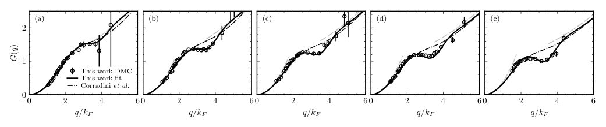
<figcaption class="paper-figure-caption"><b>Fig 1.</b> FIG. 1. Local field factor G(q) of the electron gas for (a)–(e) rs = 5, 30, 50, 70, and 100. DMC data are shown as circles, obtained with Ne = 54 electrons, except for rs = 70, where Ne = 162. The solid line is our fit defined in Eq. (2), and dashdotted line is the analytical parametrization extrapolated by Ref. [24]. Dashed lines represent the low- and high-q limits.</figcaption>
</figure>
<figure class="paper-figure-card">

<figcaption class="paper-figure-caption"><b>Fig 2.</b> FIG. 2. Exchange-correlation kernel fxc at rs = 90. The solid line is obtained from our fitted G(q), while the dashed line is obtained by manually removing the feature from the solid curve. Panel (a) shows fxc as a function of wave vector, while panel (c) shows the difference between the solid and dashed lines in (a). Panels (b) and (d) are the Fourier trans- forms of (a) and (c), respectively.</figcaption>
</figure>
<figure class="paper-figure-card">
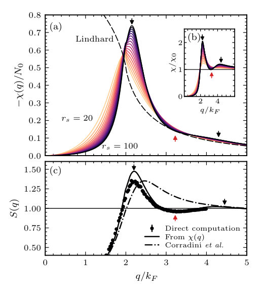
<figcaption class="paper-figure-caption"><b>Fig 3.</b> FIG. 3. (a) Static density response function χ(q) of the elec- tron gas for rs = 20–100 calculated from the analytical fit to our DMC data [Eq. (2)]. The dashed line shows the non- interacting response χ0(q). (b) The ratio χ(q)/χ0(q) of the curves in (a). (c) Static structure factor S(q) at rs = 100. Circles: direct computation (via equal-time pair correlation from separate DMC with Ne = 250), solid and dash-dotted lines: SMA results obtained through our χ(q) and the Cor- radini et al. parametrization, respectively. In all panels, the black arrows mark the first and second peak positions; red arrows mark the midpoint between the peaks. SMA results are scaled for better visibility.</figcaption>
</figure>
<figure class="paper-figure-card">
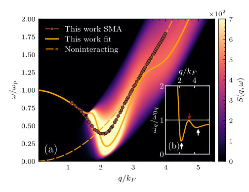
<figcaption class="paper-figure-caption"><b>Fig 4.</b> FIG. 4. (a) Dynamic structure factor S(q, ω) for rs = 90 calculated using the static G(q) as the xc kernel in the linear- response χ(q, ω). Solid orange line: collective mode dispersion from the peak of S(q, ω). Dashed line: the non-interacting dis- persion, ω0q = q2/2. Data points: collective mode dispersion using DMC S(q) as input for SMA, i.e. ωq = q2/[2S(q)]. (b) The solid orange line in (a) divided by ω0q. The white and red arrows mark the dips and peaks, respectively.</figcaption>
</figure>
</div>

<p><strong>Summary.</strong> This work uses Diffusion Monte Carlo simulations to calculate the static response functions of the 3D electron gas in highly correlated regimes. The authors identify a distinct structural feature in the local field factor G(q) that serves as a fingerprint of short-range order. This finding provides a crucial, benchmark result for improving theoretical descriptions of electronic structure in strongly interacting quantum matter.</p>
<p><strong>Why it may be interesting.</strong> The rigorous calculation of correlation functions like G(q) in the strongly coupled regime is crucial for developing accurate theoretical models for materials where electron-electron interactions dominate, which is relevant for understanding correlated phases in quantum materials.</p>
<details>
<summary>Detailed structure</summary>
<p><strong>Main problem.</strong> The study aims to accurately determine the wave-vector-dependent static local field factor G(q) and the static density-density response function for the 3D electron gas, especially in the strongly coupled regime where benchmarks are lacking.</p>
<p><strong>Main result.</strong> The calculations reveal a pronounced structure in G(q) at intermediate wave vectors, identified as a fingerprint of short-range order, which is necessary to correctly reproduce the static structure factor S(q).</p>
<p><strong>Method.</strong> Diffusion Monte Carlo (DMC) simulations are employed to calculate the static density-density response function, from which G(q) is derived using the Dyson equation.</p>
<p><strong>Model / system.</strong> The system modeled is the three-dimensional electron gas (HEG), a fundamental model in condensed matter physics used as a starting point for ab initio calculations.</p>
<p><strong>Key observables.</strong> Static local field factor G(q), static density-density response function $\chi(q)$, and the static structure factor S(q).</p>
<p><strong>Important parameters / regimes.</strong> The analysis focuses on the strongly coupled regime (low density, high correlation, $r_s > 10$) and intermediate wave vectors ($q/k_F \sim 1-4$).</p>
<p><strong>Assumptions / limitations.</strong> The analysis utilizes the Single-Mode Approximation (SMA) for calculating S(q) and develops a parametrization for G(q) valid across the entire liquid phase.</p>
<p><strong>Figures summary.</strong> Figures show G(q) for various $r_s$ comparing DMC data to fits, and also illustrate the evolution of $\chi(q)$, $S(q)$, and the dynamic structure factor $S(q, \omega)$ across different correlation regimes.</p>
<p><strong>Paper structure.</strong> The paper establishes the computational challenge, presents the DMC results for $\chi(q)$ and $G(q)$, identifies the structural feature as the fingerprint of short-range order, and concludes by developing a comprehensive parametrization for G(q) that also predicts low-energy resonant modes.</p>
</details>
<details>
<summary>Abstract</summary>
<p>The three-dimensional electron gas is a fundamental model in condensed matter physics and quantum chemistry, and the exchange-correlation energy derived from it serves as the starting point of \textit{ab initio} computations of materials. However, the wave-vector-dependent response, and hence the static local field factor $G(q)$, has remained without accurate ground-state benchmark in the strongly coupled regime for three decades. Using diffusion Monte Carlo, we calculate $G(q)$ and the static density-density response function across the liquid phase and find a pronounced structure in $G(q)$ at intermediate wave vectors, already visible at metallic densities and growing with increasing interaction strength. We identify it as a fingerprint of short-range order by showing that it is required to reproduce the static structure factor. Our parametrization, valid in the entire liquid phase, predicts a low-energy resonant mode inside the particle-hole continuum.</p>
</details>
<p><sub><a href="#top">↑ back to top</a></sub></p>

<p><a id="paper-2609.10391"></a></p>
<h3 id="the-arithmetic-of-spectra-factorization-statistics-and-symmetric-functions"><a href="http://arxiv.org/abs/2609.10391v1">The Arithmetic of Spectra: Factorization, Statistics, and Symmetric Functions</a></h3>
<p><strong>Authors:</strong> A. Chaudhary<br>
<strong>Type:</strong> theory · <strong>Category:</strong> statistical mechanics · <strong>PDF:</strong> <a href="https://arxiv.org/pdf/2609.10391v1">https://arxiv.org/pdf/2609.10391v1</a><br>
<strong>Analysis basis:</strong> full PDF text, analyzed in chunks
<strong>Topic relevance:</strong> <code>analog quantum simulation</code> <strong>1/5</strong></p>
<div class="figure-strip-hint">↔ Scroll figures horizontally</div>
<div class="paper-figures-scroll">
<figure class="paper-figure-card">

<figcaption class="paper-figure-caption"><b>Fig 1.</b> FIG. 1. The eight descent sets for n = 4, arranged in complementary pairs. Each panel shows the lowest-energy configuration compatible with its constraint set in (22), together with the total energies for a linear spectrum, P</figcaption>
</figure>
</div>

<p><strong>Summary.</strong> This paper develops a combinatorial framework by studying how the single-particle spectrum of non-interacting quantum systems can be factorized. It uses symmetric function theory to derive explicit, related formulas for the canonical Bose and Fermi partition functions. This provides a systematic mathematical tool for understanding quantum statistics based on the underlying spectral structure.</p>
<p><strong>Why it may be interesting.</strong> The deep connection between spectral factorization, combinatorial identities (symmetric functions), and the fundamental difference between Bose and Fermi statistics provides a powerful, unified mathematical tool for analyzing quantum many-body systems.</p>
<details>
<summary>Detailed structure</summary>
<p><strong>Main problem.</strong> The paper studies the factorization properties of the single-particle spectrum of non-interacting quantum systems and how these factorizations determine the resulting many-particle Bose and Fermi statistics.</p>
<p><strong>Main result.</strong> It establishes a consolidated combinatorial framework showing that product spectra lead to specific, related forms for the canonical Bose and Fermi partition functions, linking them via symmetric function identities and descent set complementation.</p>
<p><strong>Method.</strong> The authors use spectral factorization, mapping tensor factorizations of the single-particle kernel to multiplicative factorizations of a formal alphabet, and employing advanced symmetric function theory (Schur functions, $\lambda$-rings).</p>
<p><strong>Model / system.</strong> The analysis is general for non-interacting systems, initially focusing on the imaginary-time propagator ($e^{-eta H_1}$) but generalizing to arbitrary trace-class one-particle kernels $K$. Specific examples include harmonic traps and separable energy spectra.</p>
<p><strong>Key observables.</strong> Canonical Bose and Fermi partition functions ($Z_{n,B}, Z_{n,F}$), the single-particle partition function $Z_1(eta)$, and the spectral alphabet $X$.</p>
<p><strong>Important parameters / regimes.</strong> The dimensionality $d$ of the system (especially for harmonic traps), and the temperature parameter $eta$.</p>
<p><strong>Assumptions / limitations.</strong> The analysis relies on the ability to factorize the spectral alphabet $X$ into simpler components ($\hat{X}, \hat{Y}$), and the mathematical framework is built upon identities derived from the underlying spectral structure.</p>
<p><strong>Figures summary.</strong> The notes mention specific identities (Cauchy identities, dual Cauchy identities) and relationships involving major indices ($ ext{maj}(D)$) for harmonic traps, distinguishing between bosonic and fermionic sums.</p>
<p><strong>Paper structure.</strong> The paper progresses from defining the spectral factorization framework, establishing the relationship between Bose and Fermi statistics via descent sets, and then applying these concepts to specific physical models like the harmonic trap and general separable systems.</p>
</details>
<details>
<summary>Abstract</summary>
<p>We study factorizations of the single-particle spectrum of non-interacting quantum systems and their consequences for many-particle statistics. Representing the single-particle partition function by a spectral alphabet, tensor factorizations become multiplicative factorizations of the alphabet, which can be lifted to canonical Bose and Fermi partition functions using standard symmetric-function and $λ$-ring identities. We show how product spectra arise from different factorizations, how antisymmetrization can be assigned across an odd number of factors, and which tensor factorizations are compatible with a fixed spectrum. The paper therefore studies spectral factorization and provides a consolidated combinatorial framework for canonical Bose and Fermi partition functions.</p>
</details>
<p><sub><a href="#top">↑ back to top</a></sub></p>

<p><a id="paper-2609.09850"></a></p>
<h3 id="when-does-a-quantum-speedup-survive-end-to-end"><a href="http://arxiv.org/abs/2609.09850v1">When Does a Quantum Speedup Survive End-to-End?</a></h3>
<p><strong>Authors:</strong> Pablo Herrero Gómez, Antonio Jimeno Morenilla, David Muñoz Hernández, Higinio Mora Mora<br>
<strong>Type:</strong> theory · <strong>Category:</strong> quantum information and computing · <strong>PDF:</strong> <a href="https://arxiv.org/pdf/2609.09850v1">https://arxiv.org/pdf/2609.09850v1</a><br>
<strong>Analysis basis:</strong> full PDF text, analyzed in chunks
<strong>Topic relevance:</strong> <code>quantum measurements</code> <strong>1/5</strong></p>
<div class="figure-strip-hint">↔ Scroll figures horizontally</div>
<div class="paper-figures-scroll">
<figure class="paper-figure-card">

<figcaption class="paper-figure-caption"><b>Fig 1.</b> Low-resolution page preview, page 2</figcaption>
</figure>
<figure class="paper-figure-card">

<figcaption class="paper-figure-caption"><b>Fig 2.</b> Low-resolution page preview, page 3</figcaption>
</figure>
<figure class="paper-figure-card">

<figcaption class="paper-figure-caption"><b>Fig 3.</b> Low-resolution page preview, page 4</figcaption>
</figure>
<figure class="paper-figure-card">

<figcaption class="paper-figure-caption"><b>Fig 4.</b> Low-resolution page preview, page 5</figcaption>
</figure>
<figure class="paper-figure-card">

<figcaption class="paper-figure-caption"><b>Fig 5.</b> Low-resolution page preview, page 6</figcaption>
</figure>
</div>

<p><strong>Summary.</strong> This paper develops a rigorous theoretical framework to determine if a claimed quantum speedup survives when all practical overheads, including input access and output requirements, are accounted for. By introducing an 'interface-admissibility' audit, it provides a formal method to compare quantum algorithms against a matched classical baseline, showing that the advantage is highly dependent on the specific computational context.</p>
<p><strong>Why it may be interesting.</strong> While the application is TDA, the underlying methodology—creating a rigorous, overhead-aware comparison between quantum and classical complexity—is a foundational theoretical tool relevant to assessing quantum advantage in any physical simulation or computation.</p>
<details>
<summary>Detailed structure</summary>
<p><strong>Main problem.</strong> The paper addresses the fundamental question of when a quantum computational speedup remains valid when considering the entire end-to-end process, which is shown to be dependent on the specific input access and output contract.</p>
<p><strong>Main result.</strong> It establishes a formal framework, the admissibility relation, to audit quantum claims by comparing them against a rigorously defined, interface-closed classical baseline, showing that the advantage is highly context-dependent.</p>
<p><strong>Method.</strong> The authors introduce an interface-admissibility relation and an 'interface audit' procedure to formally charge all setup, transcript-generation, and precision overheads associated with matching classical and quantum access models.</p>
<p><strong>Model / system.</strong> The framework is highly abstract, dealing with general quantum access models ($ ext{AQ}$), classical access models ($  ext{AM}$), and output contracts ($  ext{O}$). It is applied specifically to the operational audit of normalized-Betti estimation in Topological Data Analysis (TDA) for clique-complexes.</p>
<p><strong>Key observables.</strong> Quantum speedup, Betti numbers, end-to-end cost ($ ext{T}_{    ext{E2E}}$), and overheads ($\Gamma_M$).</p>
<p><strong>Important parameters / regimes.</strong> The gap $\gamma$ (spectral dependence), the structure of the declared implementation package ($  ext{IQ}(x)$), and the nature of the output contract (e.g., scalar vs. dense vector).</p>
<p><strong>Assumptions / limitations.</strong> The analysis relies on the explicit definition and certification of the interface-admissibility relation and the assumption that the comparison must use an 'interface-closed' classical baseline.</p>
<p><strong>Figures summary.</strong> The notes reference a narrative map (Table 1) summarizing the framework components and a canonical case summary (Table 4) comparing various tasks (e.g., TDA Betti, QPCA) across different contracts and regimes.</p>
<p><strong>Paper structure.</strong> The paper develops a general framework for auditing quantum claims by defining the admissibility relation, applying this audit to specific physical problems like TDA, and concluding with a summary table comparing various computational tasks.</p>
</details>
<details>
<summary>Abstract</summary>
<p>Primitive quantum speedups are interface-relative: they depend on the input access used to run the primitive and on the output contract used to consume its state or samples. This paper introduces a transcript-level admissibility relation \(A_M\preceq_{\mathrm{int}}A_Q\), defined relative to the declared implementation package of the quantum interface. It identifies which adaptive classical access transcripts that same package licenses, with all setup, transcript-generation, and precision overheads charged.   The main application is an operational audit for normalized-Betti estimation in clique-complex TDA, separating three declared-interface regimes. Reversible indexed simplex interfaces certify matched classical simplex sampling and local Laplacian row access by evaluating their reversible routines on single computational branches. Membership-based preparations induce a rejection route of overhead \(\binom{n}{k+1}/|S_k|\). Abstract spectral or block-encoding interfaces require an accompanying implementation package, transcript reduction, or shared representation. Under the indexed certificate and interface closure, the end-to-end cost is fixed by the imported estimator's spectral dependence on the gap \(γ\); the concretely realized bounded-treewidth family already admits exact \(\mathrm{poly}(n)\) classical Betti computation by rank over \(\mathbb{Q}\). A low-rank separation supports the role of access and output contracts.</p>
</details>
<p><sub><a href="#top">↑ back to top</a></sub></p>
<h2 id="other-papers-29">Other papers (29)</h2>
<p><em>Papers from primary archives without highlighted authors or any topic match. Click to expand.</em></p>
<details>
<summary>Show other papers</summary>

<p><a id="paper-2609.09629"></a></p>
<h3 id="a-sum-of-squares-hierarchy-with-quadratic-convergence-for-quantum-channel-coding"><a href="http://arxiv.org/abs/2609.09629v1">A Sum-of-Squares Hierarchy with Quadratic Convergence for Quantum Channel Coding</a></h3>
<p><strong>Authors:</strong> Hoang Ta, Hoang Anh Tran<br>
<strong>Type:</strong> theory · <strong>Category:</strong> quantum information and computing · <strong>PDF:</strong> <a href="https://arxiv.org/pdf/2609.09629v1">https://arxiv.org/pdf/2609.09629v1</a><br>
<strong>Analysis basis:</strong> full PDF text, analyzed in chunks</p>
<div class="figure-strip-hint">↔ Scroll figures horizontally</div>
<div class="paper-figures-scroll">
<figure class="paper-figure-card">

<figcaption class="paper-figure-caption"><b>Fig 1.</b> Figure 1: Construction of the SOS hierarchy (upper row) and feasible certificates for its convergence analysis (lower row). The kernel is used in the proof; solving the finite SDP does not require knowing the optimal field Y∗or the value P.</figcaption>
</figure>
<figure class="paper-figure-card">
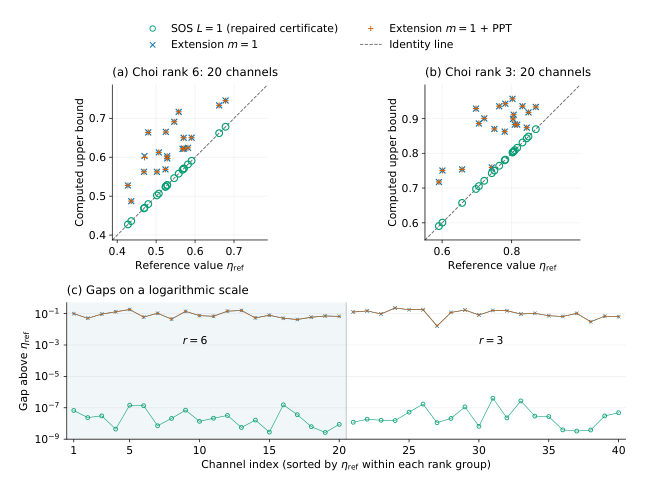
<figcaption class="paper-figure-caption"><b>Fig 2.</b> Figure 2: First-level bounds for 40 random qubit-to-qutrit channels. Panels (a) and (b) compare the computed values with ηref for Choi ranks 6 and 3. Panel (c) shows the gaps on a logarithmic scale, with channels sorted by ηref within each rank group. SOS values include numerical certificate repair.</figcaption>
</figure>
</div>
<p><strong>Summary.</strong> This work develops a novel Hermitian Sum-of-Squares (SOS) hierarchy to provide upper bounds on the optimal success probability for quantum channel coding. By employing advanced techniques involving positive polynomial kernels, the authors prove that this hierarchy exhibits quadratic convergence, significantly improving upon existing error estimates. This provides a powerful, computationally tractable tool for analyzing fundamental limits in quantum communication theory.</p>
<p><strong>Why it may be interesting.</strong> The development of polynomial-time, rapidly converging mathematical tools (SOS hierarchies) to solve fundamental, hard problems in quantum information theory is highly relevant for theoretical quantum physicists.</p>
<details>
<summary>Detailed structure</summary>
<p><strong>Main problem.</strong> The paper addresses the NP-hard problem of computing the optimal success probability for transmitting classical messages through a single use of a quantum channel.</p>
<p><strong>Main result.</strong> The authors construct a Hermitian Sum-of-Squares (SOS) hierarchy that achieves quadratic convergence for bounding this success probability.</p>
<p><strong>Method.</strong> The approach combines state-discrimination duality with positive polynomial kernels on products of spheres to construct feasible polynomial dual certificates for the SOS hierarchy.</p>
<p><strong>Model / system.</strong> The system involves a quantum channel $\Phi: L(A) 	o L(B)$ acting on finite-dimensional complex Hilbert spaces, where the goal is to maximize the average success probability $P_{	ext{succ}}(\Phi, k)$.</p>
<p><strong>Key observables.</strong> Optimal success probability $P_{	ext{succ}}(\Phi, k)$ and the trace-norm contraction coefficient $\eta_{	ext{tr}}(\Phi)$.</p>
<p><strong>Important parameters / regimes.</strong> The level $L$ of the hierarchy, and the dimension parameters $d_A$ and $d_B$ of the input and output spaces.</p>
<p><strong>Assumptions / limitations.</strong> The analysis relies on the structure of the sphere ideal and the use of positive squared-polynomial kernels to establish the convergence rate.</p>
<p><strong>Figures summary.</strong> Figure 1 summarizes the construction, contrasting the SOS hierarchy with the feasible certificates used for convergence analysis.</p>
<p><strong>Paper structure.</strong> The paper builds from defining the NP-hard problem and existing SDP bounds, to introducing the novel Hermitian SOS hierarchy, and finally proving the quadratic convergence rate using advanced polynomial and kernel techniques.</p>
</details>
<details>
<summary>Abstract</summary>
<p>Computing the optimal success probability for transmitting classical messages through a single use of a quantum channel is NP-hard, even for two messages. An existing semidefinite programming hierarchy based on symmetric extensions provides convergent upper bounds with an a priori error estimate that decays as the inverse square root of the extension level. In this work, we construct a Hermitian sum-of-squares hierarchy for an arbitrary number of messages and prove quadratic convergence in its level. The error bound is proportional to the advantage over random guessing. Our approach combines state-discrimination duality with positive polynomial kernels on products of spheres to construct feasible polynomial dual certificates. For binary messages, the resulting bounds give a multiplicative approximation from above of the trace-norm contraction coefficient.</p>
</details>
<p><sub><a href="#top">↑ back to top</a></sub></p>

<p><a id="paper-2609.10056"></a></p>
<h3 id="accelerating-a-based-algorithms-for-decoding-quantum-low-density-parity-check-codes"><a href="http://arxiv.org/abs/2609.10056v1">Accelerating A*-Based Algorithms for Decoding Quantum Low-Density Parity-Check Codes</a></h3>
<p><strong>Authors:</strong> Lamia Yous, Francisco Garcia Herrero, Mark F. Flanagan<br>
<strong>Type:</strong> theory · <strong>Category:</strong> quantum information and computing · <strong>PDF:</strong> <a href="https://arxiv.org/pdf/2609.10056v1">https://arxiv.org/pdf/2609.10056v1</a><br>
<strong>Analysis basis:</strong> full PDF text, analyzed in chunks</p>
<div class="figure-strip-hint">↔ Scroll figures horizontally</div>
<div class="paper-figures-scroll">
<figure class="paper-figure-card">

<figcaption class="paper-figure-caption"><b>Fig 1.</b> Fig. 1. Evolution of the estimated error probability from BP for a set of three sample qubits. The horizontal axis shows the BP iteration number, while the vertical axis shows the estimated probability of error. Each colored curve represents a different qubit in the Tanner graph. The curves are shown for qubits 32, 33 and 34 as these are representative of general qubit behavior.</figcaption>
</figure>
<figure class="paper-figure-card">

<figcaption class="paper-figure-caption"><b>Fig 2.</b> Fig. 2. Mean pflip values for correct and incorrect qubits versus physical error rate, p than transient fluctuations, which commonly occur in the early stages of BP decoding. As evidenced by the behavior of qubit 33 in Figure 1a, such early oscillations often stabilize as the decoder converges and should therefore not be penalized. The average step change is calculated as</figcaption>
</figure>
<figure class="paper-figure-card">

<figcaption class="paper-figure-caption"><b>Fig 3.</b> Fig. 3. Node expansion reduction factor versus pgated values for varying τ at a fixed physical error rate of p = 0.05. The node expansion reduction factor is defined as the ratio of the number of nodes expanded by the stand-alone Tesseract to those expanded by the BP-Tesseract hybrid decoder. is too high, too many qubits are not gated, which degrades the information given to Tesseract. If τ is too low, too many qubits are gated, reducing the amount of useful information available and thus increasing the number of node expansions. If pgated is too low, gated qubits are only slightly penalized, and their cost is not much higher than the reliable qubits, while if the value for pgated is too...</figcaption>
</figure>
<figure class="paper-figure-card">

<figcaption class="paper-figure-caption"><b>Fig 4.</b> Fig. 4. Mean number of node expansions versus physical error rate for the stand-alone Tesseract decoder, the BP-Tesseract decoder, and the gated BP- Tesseract decoder.</figcaption>
</figure>
<figure class="paper-figure-card">

<figcaption class="paper-figure-caption"><b>Fig 5.</b> Fig. 5. LER performance versus physical error rate for the stand-alone Tesseract decoder, the BP-Tesseract decoder, and the gated BP-Tesseract decoder, for the T1 and BB codes. directly to Tesseract without any filtering is not optimal in non-convergent cases. While the reduction in node expansions is substantial, it is also important to assess the impact on the logical error rate (LER) performance. Figure 5 presents the LER results for all three decoders for the T1 and bicycle bivariate codes. In both cases, the LER for the proposed decoder is extremely close to that of the original Tesseract. These results indicate that the proposed decoder achieves an effective balance be- tween...</figcaption>
</figure>
</div>
<p><strong>Summary.</strong> This paper introduces a novel, hybrid decoding framework for Quantum Low-Density Parity-Check (QLDPC) codes by combining Belief Propagation (BP) with the A*-based Tesseract decoder. A reliability-based gating mechanism filters the output of the fast BP stage to guide the Tesseract search on a reduced problem. This significantly accelerates decoding complexity (up to 15x reduction) while preserving the high performance of the full Tesseract decoder.</p>
<p><strong>Why it may be interesting.</strong> This work directly addresses the computational bottleneck in quantum error correction, which is crucial for scaling up quantum computation. The hybrid approach suggests a general methodology for combining fast, approximate methods with rigorous, but slow, exact solvers.</p>
<details>
<summary>Detailed structure</summary>
<p><strong>Main problem.</strong> The core problem is developing an efficient decoding algorithm for Quantum Low-Density Parity-Check (QLDPC) codes to enable reliable, large-scale quantum computation.</p>
<p><strong>Main result.</strong> The proposed hybrid BP-Tesseract decoder significantly reduces the computational complexity of decoding by at least 5x, while successfully maintaining the logical error rate of the standalone Tesseract decoder.</p>
<p><strong>Method.</strong> A two-stage decoding framework is proposed: Belief Propagation (BP) acts as a fast preprocessing step to generate initial estimates, and a reliability-based gating mechanism filters uncertain results before passing the residual problem to the A*-based Tesseract decoder.</p>
<p><strong>Model / system.</strong> The work focuses on QLDPC codes, which are quantum error correction codes often constructed using the CSS framework. The decoding process is modeled using the Tanner graph structure inherent to these codes.</p>
<p><strong>Key observables.</strong> Decoding complexity (measured by expanded nodes in the Tesseract search graph) and the Logical Error Rate (LER).</p>
<p><strong>Important parameters / regimes.</strong> Physical error rate ($p$), the gating threshold ($  au$), and the fixed prior probability ($p_{    ext{gated}}$).</p>
<p><strong>Assumptions / limitations.</strong> The primary assumption is that the high speed of BP decoding can effectively preprocess the syndrome, allowing the computationally intensive Tesseract search to operate on a much smaller, refined problem.</p>
<p><strong>Figures summary.</strong> Figures compare the mean number of node expansions and the LER for stand-alone Tesseract, BP-Tesseract, and the proposed gated BP-Tesseract decoder across various physical error rates.</p>
<p><strong>Paper structure.</strong> The paper first establishes the limitations of stand-alone Tesseract (high overhead) and BP (convergence issues). It then introduces the hybrid BP-Tesseract framework, detailing the reliability gating mechanism using metrics like $p_{	ext{flip}}$ and $\Delta_{	ext{mean}}$, and finally presents numerical results demonstrating the performance gains.</p>
</details>
<details>
<summary>Abstract</summary>
<p>Quantum low-density parity-check (QLDPC) codes represent a promising approach for error correction in quantum computing. The recently proposed Tesseract decoder uses the A* search algorithm that guarantees finding the most likely error pattern. However, practical implementations of Tesseract often involve an extremely large graph, and the inherently sequential nature of the search results in high computational overhead and long runtime. To improve decoding efficiency, we propose a two-stage decoding framework. First, a belief propagation (BP) decoder efficiently processes the syndrome. This step generates hard decisions (a binary error vector) and soft information (per-qubit confidence levels). In non-convergent BP cases, a gating mechanism examines the BP decoder's output to identify and filter out qubits with oscillating confidence values. In these cases, the refined output serves as input to Tesseract, which then attempts to identify and correct any residual errors. This hybrid approach leverages the high speed of BP decoding and delegates the more challenging decoding instances to Tesseract. Numerical results demonstrate a substantial reduction in overall decoding complexity while maintaining the logical error rate (LER) of the stand-alone Tesseract. Across all tested physical error rates, the proposed method achieves at least 5x reduction in the number of expanded nodes in the Tesseract, with a peak reduction of nearly 15x at a physical error rate of p = 0.05 for the [[126, 12, d &lt; 11]] T1 code, and approximately 8.8x at p = 0.05 for the [[72, 12, 6]] bicycle bivariate (BB) code.</p>
</details>
<p><sub><a href="#top">↑ back to top</a></sub></p>

<p><a id="paper-2609.10250"></a></p>
<h3 id="an-analysis-of-iterative-refinement-for-quantum-linear-system-solvers"><a href="http://arxiv.org/abs/2609.10250v1">An analysis of iterative refinement for quantum linear system solvers</a></h3>
<p><strong>Authors:</strong> Adrian Harkness, Mohammadhossein Mohammadisiahroudi, Brandon Augustino, Giacomo Nannicini, Tamás Terlaky<br>
<strong>Type:</strong> both · <strong>Category:</strong> quantum information and computing · <strong>PDF:</strong> <a href="https://arxiv.org/pdf/2609.10250v1">https://arxiv.org/pdf/2609.10250v1</a><br>
<strong>Analysis basis:</strong> full PDF text, analyzed in chunks</p>
<div class="figure-strip-hint">↔ Scroll figures horizontally</div>
<div class="paper-figures-scroll">
<figure class="paper-figure-card">

<figcaption class="paper-figure-caption"><b>Fig 1.</b> Figure 1. Residual norm convergence for an 8-variable linear system with q P t3, 4, 5u QPE qubits over 12 iterative refinement iterations. (a) Noise-free simulation, in which each ad- ditional QPE qubit accelerates convergence. (b) The same three configurations executed on the IBM Pittsburgh quantum computer.</figcaption>
</figure>
<figure class="paper-figure-card">

<figcaption class="paper-figure-caption"><b>Fig 2.</b> Figure 1 shows the residual norm log10 }Axpkq´b}2 as a function of the IR iteration index k. In noise-free simulation (panel (a)) the convergence rate is ordered by the precision of the quantum oracle as expected. Initializing the algorithm with a 10´9</figcaption>
</figure>
<figure class="paper-figure-card">

<figcaption class="paper-figure-caption"><b>Fig 3.</b> Figure 2. Cumulative circuit depth required to reach the residual threshold }Ax´b}2 ď ε, with and without iterative refinement. Solid curves with filled markers are measured transpiled depths: HHL + IR at the target ε “ 10´6, and direct HHL at the relaxed threshold ε “ 10´2, for which the required QPE register sizes are directly compilable. The dashed curve with hollow markers is the extrapolated direct-HHL depth at ε “ 10´6, obtained from a fitted depth model; the shaded band is the fit’s 95% prediction interval. Boxed labels indicate the required QPE register size q on each plateau.</figcaption>
</figure>
<figure class="paper-figure-card">
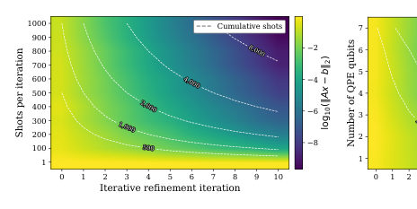
<figcaption class="paper-figure-caption"><b>Fig 4.</b> Figure 3. Trade-offs between iterative refinement iterations and quantum resources for solving a 64-variable linear system to a desired residual using HHL. Color encodes the resulting residual at each parameter combination as log10p}Ax ´ b}2q, and contour lines show cumulative quantum resources across all IR iterations. In the left plot, 6 QPE qubits are used for the HHL circuit, and in the right plot, 106 shots are used to readout x from |xy at each iteration of iterative refinement.</figcaption>
</figure>
</div>
<p><strong>Summary.</strong> This paper introduces an Iterative Refinement (IR) framework to solve quantum linear systems, overcoming a major limitation where standard methods suffer from polynomial resource scaling with required precision. By using repeated, fixed-precision quantum circuits, the IR scheme maintains polylogarithmic resource scaling, making high-accuracy quantum computation more feasible. The analysis validates this approach across various quantum hardware models.</p>
<p><strong>Why it may be interesting.</strong> This work directly addresses the practical bottleneck of achieving high-precision results in quantum simulation and computation by providing a resource-efficient algorithmic structure.</p>
<details>
<summary>Detailed structure</summary>
<p><strong>Main problem.</strong> The primary challenge is mitigating the polynomial dependence on target precision ($\epsilon^{-1}$) that arises when combining quantum linear system algorithms (QLSA) with quantum state tomography (QTA).</p>
<p><strong>Main result.</strong> The authors propose an Iterative Refinement (IR) framework that retains polylogarithmic dependence on the inverse error tolerance throughout the entire process.</p>
<p><strong>Method.</strong> The IR scheme solves a sequence of related linear systems using only fixed-precision quantum subroutines, progressively refining the solution to achieve high accuracy.</p>
<p><strong>Model / system.</strong> The analysis is conducted within the framework of quantum computation, specifically addressing the Quantum Linear System Problem (QLSP) for solving $A\mathbf{x}=\mathbf{b}$. The framework is tested across three input models: QRAM, LCU, and sparse-access oracles.</p>
<p><strong>Key observables.</strong> Residual error ($\|x - A^{-1}b\| \le \epsilon$), cumulative circuit depth, and resource scaling (QRAM accesses, oracle queries).</p>
<p><strong>Important parameters / regimes.</strong> Condition number ($\kappa_A$), sparsity ($s$), and target precision ($\epsilon$).</p>
<p><strong>Assumptions / limitations.</strong> The analysis assumes the success of quantum algorithms with probability $\ge 1 - \delta$ and relies on the ability to perform fixed-precision quantum subroutines repeatedly.</p>
<p><strong>Figures summary.</strong> Figures compare the cumulative circuit depth of direct HHL versus HHL+IR, showing IR maintains a constant per-iteration cost while achieving higher precision, avoiding the staircase depth scaling of direct methods.</p>
<p><strong>Paper structure.</strong> The paper first establishes the limitation of current QLSAs regarding precision scaling, then introduces and analyzes the IR framework across multiple input models, followed by numerical validation on simulators and hardware.</p>
</details>
<details>
<summary>Abstract</summary>
<p>We present and analyze an iterative refinement (IR) framework for improving the precision dependence of algorithms that combine a quantum linear system algorithm (QLSA) with quantum state tomography. Existing QLSAs achieve polylogarithmic dependence on the inverse error tolerance to prepare a quantum state encoding the solution, but extracting a classical description of such a state via tomography typically introduces a polynomial dependence on the target precision. To retain polylogarithmic dependence in the inverse error tolerance throughout the entire process, we develop an IR scheme that solves a sequence of related linear systems to progressively refine the solution while requiring only fixed-precision quantum subroutines, finally obtaining a classical description of a high-precision solution. We analyze the proposed framework under three input models: quantum-read/classical-write RAM (QRAM), linear combinations of unitaries (LCU), and sparse-access oracles. We evaluate the proposed scheme through numerical experiments on both quantum simulators and real quantum hardware. The results demonstrate that iterative refinement efficiently improves the precision of the solution and exhibits robustness to hardware noise.</p>
</details>
<p><sub><a href="#top">↑ back to top</a></sub></p>

<p><a id="paper-2609.09699"></a></p>
<h3 id="anomalous-hall-response-induced-by-correlated-disorder-in-the-breathing-kagome-lattice-mnmath884mathsn"><a href="http://arxiv.org/abs/2609.09699v1">Anomalous Hall Response Induced by Correlated Disorder in the Breathing Kagome Lattice Mn$_{3}$Sn</a></h3>
<p><strong>Authors:</strong> Tsung-Han Yang, Seng Huat Lee, Hengxin Tan, Yuanpeng Zhang, Benjamin A. Frandsen, Václav Petříček, Huibo Cao, Daniel Olds, Matthew G. Tucker, Jiaqiang Yan, Binghai Yan, Zhiqiang Mao, Qiang Zhang<br>
<strong>Type:</strong> both · <strong>Category:</strong> strongly correlated electrons · <strong>PDF:</strong> <a href="https://arxiv.org/pdf/2609.09699v1">https://arxiv.org/pdf/2609.09699v1</a><br>
<strong>Analysis basis:</strong> full PDF text, analyzed in chunks</p>
<div class="figure-strip-hint">↔ Scroll figures horizontally</div>
<div class="paper-figures-scroll">
<figure class="paper-figure-card">

<figcaption class="paper-figure-caption"><b>Fig 1.</b> FIG. 1. Crystal and magnetic structures from diffraction and magnetization measurements. (a) and (b) show top and side views, respectively at 295 K. (c) Temperature-dependent neu- tron powder diffraction at POWGEN showing the emergence of incommensurate magnetic reflections below TN2. (d) Tem- perature dependence of the integrated intensity of the (101) reflection, revealing the magnetic phase transitions at TN1 and TN2. (e) Temperature dependence of the magnetization for H ∥x, y, and z, showing the magnetic transition at TN2. (f) Temperature dependence of the lattice parameters obtained from synchrotron powder x-ray diffraction performed at 28- ID-1 (PDF) beamline.</figcaption>
</figure>
<figure class="paper-figure-card">
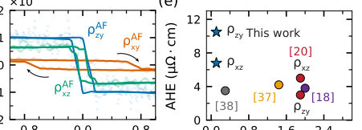
<figcaption class="paper-figure-caption"><b>Fig 2.</b> FIG. 2. Magnetic field dependence of the AHE in nearly sto- ichiometric Mn3Sn at 300 K. (a) Schematics of the three con- figurations used for AHE measurements on σyz, σyx and σzx. (b) Field-dependent Hall conductivity components measured at 300 K. (c) Anomalous Hall resistivity ∆ρH = ρH −R0µ0H plotted as a function of magnetization M. (d) Field de- pendence of the antiferromagnetic Hall component, ρAF H = ρH −R0µ0H −Rsµ0M, obtained by subtracting the ordi- nary and magnetization-linear contributions. (e) Comparison of the anomalous Hall resistivity and carrier density n for Mn3+δSn reported in this work and previous studies.</figcaption>
</figure>
<figure class="paper-figure-card">
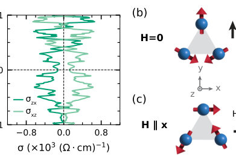
<figcaption class="paper-figure-caption"><b>Fig 3.</b> FIG. 3. Anomalous Hall conductivity and magnetic-field- induced spin rotation of Mn3Sn. (a) DFT-calculated intrinsic AHC components for the average hexagonal structure. (b) Reference magnetic structure used for the DFT calculations of the intrinsic AHC. (c) Schematic rotation of the noncollinear Mn moments under H ∥x, generating σyz.</figcaption>
</figure>
<figure class="paper-figure-card">

<figcaption class="paper-figure-caption"><b>Fig 4.</b> FIG. 4. Local structural distortion and spin canting in Mn3Sn. (a) Local structural motif of Mn3Sn at 500 K pre- sented in a hexagonal cell. The tilted Mn–Mn–Mn triangles within the kagome plane are resolved, revealing a bond-length disproportionation of 0.2 Å and asymmetric bond angles of 123◦and 117◦, which breaks hexagonal symmetry. (b) RMC modeling results of GK(r) compared to experimental data. (c) Partial pair distribution function for individual atomic pairs, showing well-resolved Mn–Mn and Mn–Sn atomic pairs near 2.7 Å. (d) Magnetic PDF fits showing a substantial mPDF sig- nal. (e) Local magnetic-moment motif at 300 K from mPDF refinement. (f) DFT-calculated intrinsic AHC components...</figcaption>
</figure>
<figure class="paper-figure-card">
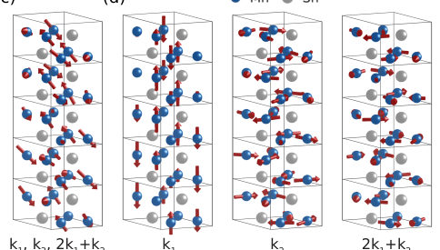
<figcaption class="paper-figure-caption"><b>Fig 5.</b> FIG. 5. Single-crystal neutron diffraction and low-T mag- netic structure of Mn3Sn below TN2. (a) Reconstruction of the (H0L) plane near the (−101) nuclear reflection at 6 K, showing magnetic satellites with k1 and k2 and their higher harmonics; the corresponding L profile is shown at right. (b) Observed and calculated structure-factor amplitudes for nu- clear (blue) and magnetic (red) reflections. (c) Refined mag- netic structure combining the k1, k2, and 2k1 + k2 compo- nents. (d) Decomposition into the individual k1, k2, and components.</figcaption>
</figure>
</div>
<p><strong>Summary.</strong> This study investigates the anomalous Hall response in $   ext{Mn}_3   ext{Sn}$, finding a finite, symmetry-forbidden $\sigma_{yx}$ component in a specific magnetic phase. The authors argue that this response is not due to the average crystal symmetry but rather arises from correlated local lattice distortions and noncoplanar magnetic moments. This establishes correlated disorder as a crucial, symmetry-breaking degree of freedom enabling topological transport.</p>
<p><strong>Why it may be interesting.</strong> This work is highly relevant as it bridges macroscopic transport properties (AHE) with microscopic structural/magnetic details, providing a concrete example of how local symmetry breaking can manifest topological phenomena, which is a key concept in modern condensed matter theory.</p>
<details>
<summary>Detailed structure</summary>
<p><strong>Main problem.</strong> The study investigates how correlated disorder can activate anomalous Hall responses ($\sigma_{yx}$) in the Kagome antiferromagnetic Weyl semimetal $   ext{Mn}_3   ext{Sn}$, components otherwise forbidden by the average crystallographic symmetry.</p>
<p><strong>Main result.</strong> The finite, hysteretic $\sigma_{yx}$ observed in the intermediate magnetic phase is attributed to correlated local orthorhombic distortions and noncoplanar Mn moments, demonstrating that local symmetry breaking can enable topological transport inaccessible from the Bragg-average structure.</p>
<p><strong>Method.</strong> The research combines experimental measurements (Hall transport, neutron/X-ray diffraction, PDF analysis) with first-principles DFT calculations incorporating local structural and magnetic distortions.</p>
<p><strong>Model / system.</strong> The system is the nearly stoichiometric $   ext{Mn}_3   ext{Sn}$ crystal, a Kagome antiferromagnet exhibiting multiple magnetic transitions. The analysis focuses on the interplay between the average hexagonal symmetry and local symmetry breaking induced by lattice distortions and noncoplanar magnetic ordering.</p>
<p><strong>Key observables.</strong> Anomalous Hall conductivity components ($\sigma_{yx}, \sigma_{zx}, \sigma_{yz}$), magnetic transition temperatures ($T_{N1}, T_{N2}$), and local structural/magnetic parameters (e.g., canting angles).</p>
<p><strong>Important parameters / regimes.</strong> Temperature regimes ($T_{N2} < T < T_{N1}$), magnetic field dependence, and the degree of lattice distortion (orthorhombic).</p>
<p><strong>Assumptions / limitations.</strong> The core assumption is that electronic transport is sensitive to local symmetry breaking over finite length scales, even when the average structure maintains higher symmetry.</p>
<p><strong>Figures summary.</strong> Figures show temperature dependence of Hall conductivity (with hysteresis), structural/magnetic phase diagrams, and comparisons between DFT predictions using average vs. distorted structures.</p>
<p><strong>Paper structure.</strong> The paper progresses by first establishing the symmetry constraints (average structure predicts $\sigma_{yx}=0$), then presenting experimental evidence of finite, hysteretic $\sigma_{yx}$ in the intermediate phase, and finally using local structure/magnetism analysis (PDF, DFT) to theoretically explain the activation mechanism via correlated disorder.</p>
</details>
<details>
<summary>Abstract</summary>
<p>Macroscopic transport tensors are generally constrained by the average crystallographic and magnetic symmetries of a material. In the kagome antiferromagnetic Weyl semimetals Mn$_{3+δ}X$ ($X=$~Sn or Ge), previous studies showed that the anomalous Hall conductivity $σ_{yx}$ is forbidden by the average \hexsg{} structure and coplanar inverse-triangular magnetic order. Here we report that nearly stoichiometric Mn$_3$Sn nevertheless exhibits a finite $σ_{yx}$ with large hysteresis, together with enhanced $σ_{zx}$ and $σ_{yz}$, in the inverse-triangular phase below $T_{\mathrm{N1}}\approx 440~\mathrm{K}$, whereas all AHE components vanish in the amplitude-modulated conical phase below $T_{\mathrm{N2}}\approx 280~\mathrm{K}$. Total scattering and magnetic pair distribution function analysis reveal correlated orthorhombic distortions and noncoplanar Mn moments. First-principles calculations show that this coupled lattice-spin distortion activates the average symmetry forbidden $σ_{yx}$ within the inverse-triangular phase. Its disappearance below $T_{\mathrm{N2}}$ indicates that the correlated disorder must cooperate with a long-range inverse-triangular antiferromagnetic order capable of supporting Berry curvature. Our results establish correlated disorder as an active symmetry-breaking degree of freedom that enables topological transport inaccessible from the Bragg-average structure alone.</p>
</details>
<p><sub><a href="#top">↑ back to top</a></sub></p>

<p><a id="paper-2609.09731"></a></p>
<h3 id="conditions-for-global-optimality-in-quantum-arimoto-blahut-algorithms"><a href="http://arxiv.org/abs/2609.09731v1">Conditions for Global Optimality in Quantum Arimoto-Blahut Algorithms</a></h3>
<p><strong>Authors:</strong> Geng Liu, Masahito Hayashi<br>
<strong>Type:</strong> theory · <strong>Category:</strong> quantum information and computing · <strong>PDF:</strong> <a href="https://arxiv.org/pdf/2609.09731v1">https://arxiv.org/pdf/2609.09731v1</a><br>
<strong>Analysis basis:</strong> full PDF text, analyzed in chunks</p>
<div class="figure-strip-hint">↔ Scroll figures horizontally</div>
<div class="paper-figures-scroll">
<figure class="paper-figure-card">

<figcaption class="paper-figure-caption"><b>Fig 1.</b> Fig. 1. Comparison of AB and MD iterative behavior in the unconstrained case. The vertical axis shows the value of f(ρ). The horizontal axis shows the number of iterations. The blue line represents the iterative behavior of the AB algorithm. The orange line represents the iterative behavior of the MD algorithm. The yellow line represents the theoretical value of −D(Ddeph∥Dp).</figcaption>
</figure>
<figure class="paper-figure-card">
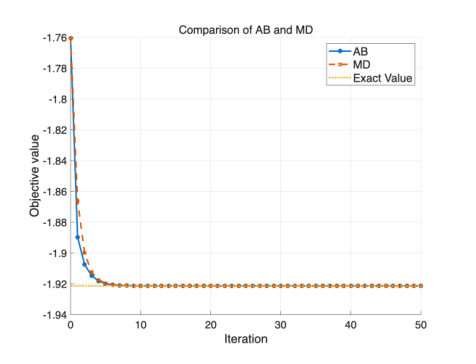
<figcaption class="paper-figure-caption"><b>Fig 2.</b> Fig. 2. Comparison of AB and MD iterative behavior in the constrained case. The vertical axis shows the value of f(ρ). The horizontal axis shows the number of iterations. The blue line represents the iterative behavior of the AB algorithm. The orange line represents the iterative behavior of the MD algorithm. The yellow line represents the theoretical value of −D(Ddeph∥Dp).</figcaption>
</figure>
<figure class="paper-figure-card">
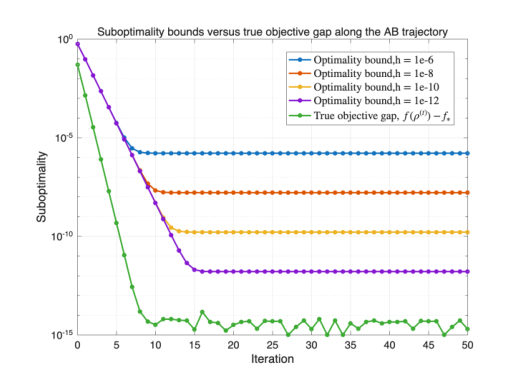
<figcaption class="paper-figure-caption"><b>Fig 3.</b> Fig. 3. Comparison of certified suboptimality bounds and the true objective gap along the AB trajectory in the unconstrained case. The vertical axis shows the suboptimality on a logarithmic scale. The horizontal axis shows the number of iterations. The blue, orange, yellow, and purple lines represent the certified bounds obtained with h = 10−6, 10−8, 10−10, and 10−12, respectively. The green line represents the true objective gap f(ρ(t)) −f∗.</figcaption>
</figure>
<figure class="paper-figure-card">

<figcaption class="paper-figure-caption"><b>Fig 4.</b> Fig. 5. Comparison of AB and MD iterative behavior associated with D(Dad∥Dp). The vertical axis shows the value of f(ρ). The horizontal axis shows the number of iterations. The blue line represents the iterative behavior of the AB algorithm. The orange line represents the iterative behavior of the MD algorithm.</figcaption>
</figure>
<figure class="paper-figure-card">

<figcaption class="paper-figure-caption"><b>Fig 5.</b> Fig. 4. Comparison of certified suboptimality bounds and the true objective gap along the AB trajectory in the constrained case. The vertical axis shows the suboptimality on a logarithmic scale. The horizontal axis shows the number of iterations. The blue, orange, yellow, and purple lines represent the certified bounds obtained with h = 10−4, 10−6, 10−8, and 10−10, respectively. The green line represents the true objective gap f(ρ(t)) −f∗.</figcaption>
</figure>
</div>
<p><strong>Summary.</strong> This theoretical paper develops structural criteria to determine when quantum optimization algorithms, specifically the Arimoto-Blahut (AB) method, achieve global optimality. It establishes that optimality depends on a precise relationship between the AB update direction and the objective gradient relative to the constraint space. The findings provide powerful, computable certificates for assessing the reliability of quantum optimization routines.</p>
<p><strong>Why it may be interesting.</strong> This work provides rigorous, computable criteria for assessing convergence in quantum optimization algorithms, which is crucial for designing reliable quantum information processing protocols.</p>
<details>
<summary>Detailed structure</summary>
<p><strong>Main problem.</strong> The paper establishes necessary and sufficient conditions for the global optimality of fixed points generated by generalized Arimoto-Blahut (AB) algorithms when optimizing quantum objectives.</p>
<p><strong>Main result.</strong> Global optimality is guaranteed if and only if the AB update direction and the objective gradient differ by an element of the constraint normal space. Furthermore, an <em>a posteriori</em> certificate based on feasible directional derivatives can detect suboptimal fixed points.</p>
<p><strong>Method.</strong> The authors compare the AB iterative update rule with the Mirror Descent (MD) update rule, deriving algebraic conditions for their equivalence and developing finite-difference certificates for optimality.</p>
<p><strong>Model / system.</strong> The analysis focuses on optimizing objective functions $f(
ho) = 	ext{Tr} \ 
ho \Omega(
ho)$ over quantum states $
ho$ constrained to a manifold $M$ in a finite-dimensional Hilbert space $H$. The context involves quantum channels and relative entropy minimization.</p>
<p><strong>Key observables.</strong> The objective function $f(
ho)$, the AB update direction $\Omega(
ho)$, the gradient $
abla f(
ho)$, and the diagnostic quantity $ ext{Tr}[(
ho - b
ho_H)\Omega(
ho)]$.</p>
<p><strong>Important parameters / regimes.</strong> The structure of the linear constraints defining the manifold $M$, and the specific parameters of the quantum channels analyzed (e.g., dephasing vs. depolarizing).</p>
<p><strong>Assumptions / limitations.</strong> The analysis assumes the objective function is convex and differentiable, and it notes that monotonic objective decrease and numerical stabilization are insufficient guarantees for global optimality.</p>
<p><strong>Figures summary.</strong> Not specified in the notes, but the analysis relies on deriving explicit gradient formulas (e.g., Equation (229)) and proving strict positivity of diagnostic quantities away from the fixed point.</p>
<p><strong>Paper structure.</strong> The paper proceeds by first establishing the necessary and sufficient algebraic conditions for AB and MD equivalence. It then develops <em>a posteriori</em> optimality certificates using feasible directional derivatives, culminating in proofs of uniqueness for the global minimizer in specific channel models.</p>
</details>
<details>
<summary>Abstract</summary>
<p>Generalized Arimoto--Blahut (AB) algorithms are widely used in information theory and quantum optimization, but monotonic objective decrease and numerical stabilization do not guarantee global optimality. We establish necessary and sufficient conditions for the global optimality of full-rank AB fixed points for convex differentiable objectives under linear constraints. An AB fixed point is globally optimal if and only if the AB update direction and the objective gradient differ by an element of the constraint normal space at that point. The same compatibility condition characterizes agreement between individual AB and mirror-descent (MD) updates, whereas pathwise equivalence requires it along the entire common trajectory. Thus, an AB algorithm may follow a trajectory different from MD and still reach the global optimum. We also develop a posteriori optimality certificates based on feasible directional derivatives, including finite-difference upper bounds on the objective gap that require only objective evaluations. For channel relative entropy between dephasing and depolarizing channels, we analytically identify the global minimizer as the unique full-rank AB fixed point, although pathwise equivalence fails. Numerical experiments illustrate convergence of AB and MD along different trajectories and validate the certificates. By contrast, an amplitude-damping example shows that a monotone AB iteration can stabilize at a suboptimal fixed point, whose nonoptimality is detected by the finite-difference certificate. These results provide structural and computable criteria for assessing global optimality in quantum AB algorithms.</p>
</details>
<p><sub><a href="#top">↑ back to top</a></sub></p>

<p><a id="paper-2609.09993"></a></p>
<h3 id="direct-cultivation-of-entangled-math910math-magic-states"><a href="http://arxiv.org/abs/2609.09993v1">Direct Cultivation of Entangled $|CS\rangle$ Magic States</a></h3>
<p><strong>Authors:</strong> Gunsik Min, Jun Heo<br>
<strong>Type:</strong> theory · <strong>Category:</strong> quantum information and computing · <strong>PDF:</strong> <a href="https://arxiv.org/pdf/2609.09993v1">https://arxiv.org/pdf/2609.09993v1</a><br>
<strong>Analysis basis:</strong> full PDF text, analyzed in chunks</p>
<div class="figure-strip-hint">↔ Scroll figures horizontally</div>
<div class="paper-figures-scroll">
<figure class="paper-figure-card">
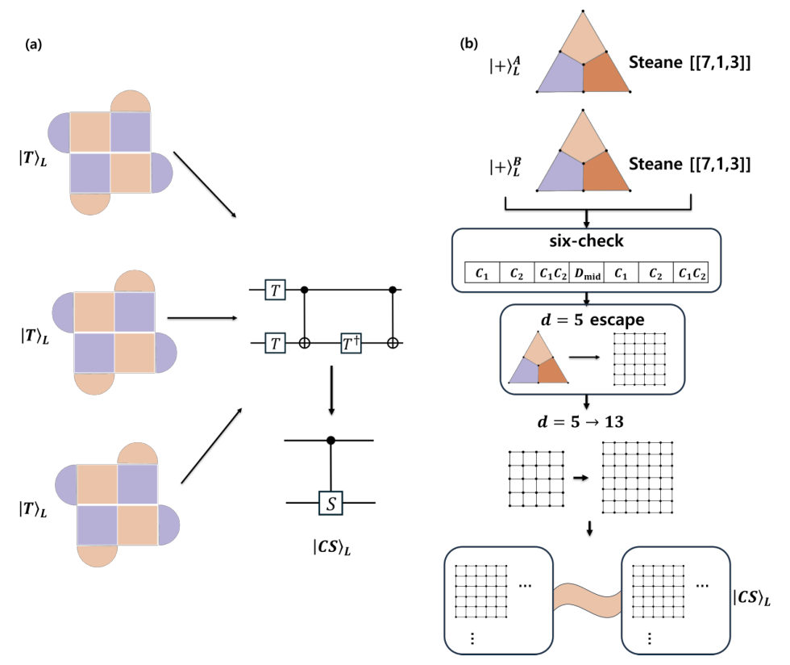
<figcaption class="paper-figure-caption"><b>Fig 1.</b> FIG. 1. Architecture overview and indirect comparator. (a) The indirect route prepares three logical |T⟩L resources and converts them to |CS⟩L with a Clifford+T circuit. (b) The direct route starts from two Steane [[7, 1, 3]] blocks in |+⟩L, applies the six-check sequence C1, C2, C12 | Dmid | C1, C2, C12, and immediately transfers the accepted state through the Steane-to-d = 5 escape and direct d = 5→13 surface-code growth. The three-T route is used only as a resource comparator.</figcaption>
</figure>
<figure class="paper-figure-card">

<figcaption class="paper-figure-caption"><b>Fig 2.</b> FIG. 2. Six-check measurement sequence and coded record. (a) The two Steane blocks undergo C1, C2, and C12 measurements, midpoint error detection Dmid, and a second measurement triple. (b) The ideal history g6(a, b) = (a, b, a ⊕ b, a, b, a ⊕b) forms a [6, 2, 4] record code. (c) Records outside the four valid codewords are rejected. (d) All four ideal branches are usable and differ only by the Pauli-frame update Za AZb B.</figcaption>
</figure>
<figure class="paper-figure-card">

<figcaption class="paper-figure-caption"><b>Fig 3.</b> FIG. 3. Steane-coordinate checks and CZZ-based compilation. (a) Matching coordinates of Steane blocks A and B realize the logical checks C1, C2, and C12 through transversal products of the local operators. (b) A cat ancilla controls G∗= C(H ⊗H), synthesized from one CZZ interaction and local Ry(π/4) rotations. Clifford wrappers Q1, Q2, and Q12 give the three coordinate checks. The six-check core contains 42 CZZ, 56 CX, and 224 one-qubit locations.</figcaption>
</figure>
<figure class="paper-figure-card">
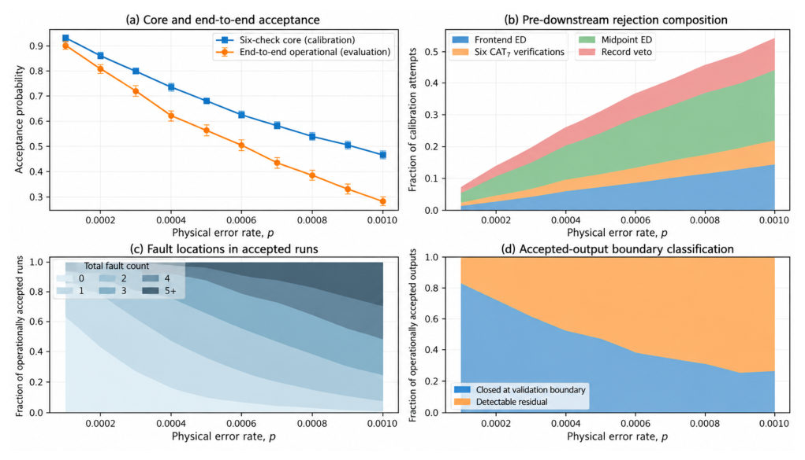
<figcaption class="paper-figure-caption"><b>Fig 4.</b> FIG. 4. Factory yield and accepted-output classification. (a) Acceptance of the six-check core and the complete factory. The two curves use independent calibration and evaluation samples. (b) Sources of rejection before the downstream stage. (c) Number of sampled fault locations in operationally accepted runs. (d) Accepted outputs are classified as either closed at the validation boundary or containing a detectable residual syndrome. Detectable residuals are not retrospectively rejected.</figcaption>
</figure>
<figure class="paper-figure-card">
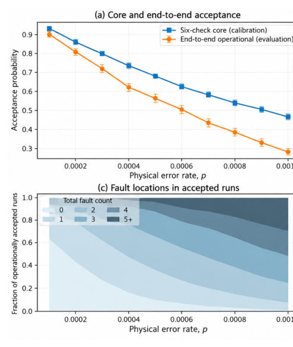
<figcaption class="paper-figure-caption"><b>Fig 5.</b> Figure 5(b) shows how decoder workload changes with p. The fraction of nontrivial records that reach the four- coset BP+OSD stage grows from about 4.7% at 10−4 to 44.7% at 10−3, while the median gap falls from 13.24 to 6.91. Every audited record has full four-coset coverage and no BP+OSD decoding failure is observed. The trend therefore reflects increasing ambiguity at higher p.</figcaption>
</figure>
</div>
<p><strong>Summary.</strong> This paper details a novel, fault-tolerant architecture for directly generating the entangled magic state $|CS
angle$ required for quantum computation. By employing a protected branch record and advanced error correction gadgets, the authors demonstrate that this direct method can be significantly more resource-efficient than established indirect preparation methods at low noise levels. This advances the practical feasibility assessment of fault-tolerant quantum computation.</p>
<p><strong>Why it may be interesting.</strong> It provides a concrete, resource-cost analysis for generating a crucial non-Clifford resource state, which is fundamental for universal quantum computation protocols.</p>
<details>
<summary>Detailed structure</summary>
<p><strong>Main problem.</strong> The paper addresses the challenge of developing a direct, fault-tolerant quantum circuit architecture for cultivating the entangled non-Clifford magic state $|CS
angle$. It aims to compare this direct method against established indirect resource preparation routes.</p>
<p><strong>Main result.</strong> The direct cultivation route was shown to be operationally cheaper than the three-T route at two lower-noise benchmark points, demonstrating a viable, fault-tolerant method for generating the required non-Clifford resource.</p>
<p><strong>Method.</strong> The authors employed detailed quantum error correction analysis, including the use of a minimal six-check classical record, verified CAT7 gadgets, and advanced decoding algorithms like four-coset BP+OSD.</p>
<p><strong>Model / system.</strong> The work is situated in the context of fault-tolerant quantum computation, specifically utilizing Steane error detection and expanding from smaller surface code patches ($d=5$) to larger ones ($d=13$).</p>
<p><strong>Key observables.</strong> Operation count (active locations), Logical Error Rate (LER), and the fault order of the certified output channel (order three).</p>
<p><strong>Important parameters / regimes.</strong> Physical error rate ($p$), logical error rate ($L_g(p)$), and the required resource overhead (e.g., 263 detector bits).</p>
<p><strong>Assumptions / limitations.</strong> The analysis is performed under the active-location stochastic-Pauli model, and comparisons often rely on assumptions regarding pre-existing output patches for the indirect route.</p>
<p><strong>Figures summary.</strong> Figures compare the resource costs (active locations) and logical error rates between the direct cultivation route and the indirect three-T route across varying noise levels.</p>
<p><strong>Paper structure.</strong> The paper progresses from defining the target state and its projection, detailing the error protection mechanism using a six-check record, presenting the full factory architecture, and concluding with a quantitative comparison of resource costs and error performance against the standard indirect method.</p>
</details>
<details>
<summary>Abstract</summary>
<p>Magic-state cultivation has so far focused mainly on single-qubit non-Clifford resources. We develop a direct cultivation architecture for the entangled state $|CS\rangle=CS|++\rangle$. Two commuting Clifford involutions project onto four usable branches related by Pauli-frame updates. A minimal six-bit $[6,2,4]$ record protects the branch label against readout errors that map one valid record to another. Verified CAT$_7$ gadgets, Steane error detection, CZZ-based controlled checks, and immediate Steane-to-surface expansion form the complete factory. The decoder uses 263 operational detector bits, while 168 additional bits are withheld for later validation. Decoding proceeds through exact low-order resolution, a precomputed higher-order catalogue, and four-coset BP+OSD. Under the stated active-location stochastic-Pauli model, exact enumeration finds no accepted closed-boundary logical-failure mechanism through fault order two, while explicit order-three failure mechanisms exist. Finite-$p$ simulations quantify acceptance, residual syndromes, and decoder workload, and targeted sampling of order-three faults estimates the leading logical-error channels. Optimizing the direct $d=5\rightarrow13$ expansion reduces accepted-output operation count by approximately 35--37\%. We compare the two routes at the same binary logical-error rate. Direct CS remains cheaper in operation count at the two lower-noise benchmark points even when the three-$T$ route is given pre-existing output patches. The ordering reverses between $8\times10^{-4}$ and $9\times10^{-4}$. These results show that an entangled non-Clifford state can be cultivated directly with a protected branch record and an explicitly certified fault-order-three output channel.</p>
</details>
<p><sub><a href="#top">↑ back to top</a></sub></p>

<p><a id="paper-2609.09582"></a></p>
<h3 id="ecdsafail-open-autoresearch-for-optimizing-elliptic-curve-point-addition-in-shors-algorithm"><a href="http://arxiv.org/abs/2609.09582v1">ECDSA.Fail: Open Autoresearch for Optimizing Elliptic-Curve Point Addition in Shor's Algorithm</a></h3>
<p><strong>Authors:</strong> Jieyi Long, Theodore Pender, Zhao Huang, Manuel B. Santos, Samrendra Kumar Singh, Bartosz Naskręcki, Bit Wonka, Joe Doyle, Pierre-Luc Dallaire-Demers, Francesco Giannicola, Ruben M. L. Paschoarelli, Oli Freuler, Jackie Chia-Hsun Lee, Vasily Gnuchev, Gopi Kannappan, John Boyer, Xavier Butler, Akash Balasubramani, Jordan Newman, Bereket Dereje, Alexander Hertlein, Robert Kodra, Lucas Levy, Shaan Patel, JT Rose, Matt Zweil, Okechukwu Wisdom, Tarek El-Eter, Edison Lee, Michael Dong, Alan Li, Anto Joseph, Gajesh Naik, Gautham Anant, Soubhik Deb, Justin Drake<br>
<strong>Type:</strong> theory · <strong>Category:</strong> quantum information and computing · <strong>PDF:</strong> <a href="https://arxiv.org/pdf/2609.09582v1">https://arxiv.org/pdf/2609.09582v1</a><br>
<strong>Analysis basis:</strong> full PDF text, analyzed in chunks</p>
<div class="figure-strip-hint">↔ Scroll figures horizontally</div>
<div class="paper-figures-scroll">
<figure class="paper-figure-card">
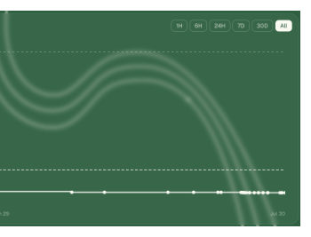
<figcaption class="paper-figure-caption"><b>Fig 1.</b> Fig. 1: Evolution of the best ECDSA.Fail Q × T score, from the 10.75B baseline to 1.496B at the data cutoff, an 86.1% reduction. The dashed line marks the re- ported Google/Babbush et al. [3] operating point of 2.993B. The challenge score is more than 50% lower, although differing interfaces and accounting conventions make the comparison contextual.</figcaption>
</figure>
<figure class="paper-figure-card">
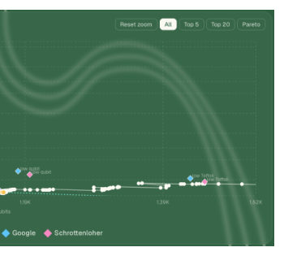
<figcaption class="paper-figure-caption"><b>Fig 2.</b> Fig. 2: ECDSA.Fail qubit–Toffoli Pareto frontier. White points are challenge sub- missions; orange and purple circles are promoted and non-promoted admitted Pareto points; the cyan dotted curve marks the best observed Q × T; and dia- monds mark the Google/Babbush [3] (blue) and Schrottenloher [59] (pink) op- erating points. External points are contextual because interfaces and accounting conventions differ; see Tables 2 and 3.</figcaption>
</figure>
<figure class="paper-figure-card">
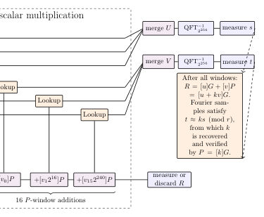
<figcaption class="paper-figure-caption"><b>Fig 3.</b> Fig. 3: Placement of the point-addition kernel within a power-of-two implemen- tation of windowed Shor ECDLP. The coherent exponent registers are pre- pared over Z2256 and split into 16-bit windows. Each window coherently selects a precomputed multiple of G or P and adds it to the accumulator, yielding R = [u]G + [v]P before inverse power-of-two Fourier transforms and measure- ment. Unlike the idealized formulation over Z2 r, the measured Fourier samples need not satisfy the annihilator relation exactly; they concentrate near it and re- quire classical postprocessing followed by verification of the recovered candidate k. The figure shows the coherent-register formulation; an iterative...</figcaption>
</figure>
<figure class="paper-figure-card">

<figcaption class="paper-figure-caption"><b>Fig 4.</b> Fig. 4: The two point-addition interfaces used to compute one scalar multipli- cation [s]B, where (s, B) denotes either (u, G) or (v, P). (a) In the double- and-add approach, each scalar bit si controls a mixed addition of the fixed, classically known point [2i]B to the accumulator |R⟩; this addend is fixed at circuit-construction time and does not occupy a quantum register. (b) In the windowed approach, the scalar is divided into 16-bit words ji = s16i:16i+16. Each |ji⟩indexes a QROM lookup into the precomputed table T (i) B , and the selected point T (i) B [ji] is added coherently to |R⟩. The selected addend is therefore quan- tum data entangled with the window register.</figcaption>
</figure>
<figure class="paper-figure-card">

<figcaption class="paper-figure-caption"><b>Fig 5.</b> Fig. 5: The generic open autoresearch discovery loop. Independent human–agent teams select a current-best, Pareto, or deliberately off-frontier base from the shared repository, propose a change, and submit it to a machine-checkable evalu- ator. Verified improvements become shared bases; rejected candidates are logged with their diagnoses and revised. This makes the search cumulative without re- quiring prior coordination beyond the shared objective, evaluator, and public artifacts.</figcaption>
</figure>
</div>
<p><strong>Summary.</strong> This paper introduces 'Open Autoresearch,' a novel paradigm for quantum circuit optimization, applied to the bottleneck of elliptic-curve point addition required for Shor's algorithm. By leveraging AI agents and human collaboration on a public leaderboard, participants achieved massive reductions in resource estimates ($Q 	imes T$), pushing the state-of-the-art for quantum cryptanalysis.</p>
<p><strong>Why it may be interesting.</strong> While focused on cryptography, the methodology—using AI agents in a public, verifiable autoresearch loop to optimize complex quantum circuits—is highly relevant to developing efficient quantum algorithms for general quantum information processing tasks.</p>
<details>
<summary>Detailed structure</summary>
<p><strong>Main problem.</strong> The paper focuses on optimizing the reversible secp256k1 point-addition circuit, which represents a critical computational bottleneck in implementing Shor's algorithm for breaking elliptic-curve cryptography.</p>
<p><strong>Main result.</strong> Participants in the Open Autoresearch benchmark reduced the spacetime-inspired score $S=Q	imes T$ by 86.1% compared to the baseline, achieving scores significantly lower than previously published thresholds.</p>
<p><strong>Method.</strong> The authors propose and utilize 'Open Autoresearch,' a paradigm where human and AI agents iteratively improve solutions on a public, machine-checkable leaderboard to optimize quantum circuits.</p>
<p><strong>Model / system.</strong> The model is a quantum circuit designed to perform elliptic-curve point addition on the secp256k1 curve. Optimization targets the minimization of the product of peak logical qubit width ($Q$) and average executed Toffoli count ($T$).</p>
<p><strong>Key observables.</strong> The primary observable is the score $S = Q 	imes T$. Other key metrics include the peak logical qubit width ($Q$), the average executed Toffoli count ($T$), and the empirical success probability ($\hat{p}$).</p>
<p><strong>Important parameters / regimes.</strong> The optimization is benchmarked against specific cryptographic standards (secp256k1) and compares results against published thresholds from Google and Schrottenloher.</p>
<p><strong>Assumptions / limitations.</strong> Comparisons to external benchmarks are noted to be contextual due to differing interfaces, accounting conventions, and validation scopes. The benchmark supplies one addend classically, requiring a specific circuit variant.</p>
<p><strong>Figures summary.</strong> Figure 1 illustrates the dramatic reduction in the best ECDSA.Fail $Q 	imes T$ score over time, showing a reduction from a 10.75B baseline to 1.496B at the data cutoff.</p>
<p><strong>Paper structure.</strong> The paper introduces the Open Autoresearch framework, details the ECDSA.Fail benchmark for point addition optimization, presents the iterative results showing performance improvements, and discusses the implications of these resource reductions for quantum cryptanalysis.</p>
</details>
<details>
<summary>Abstract</summary>
<p>We propose Open Autoresearch, a paradigm in which humans and AI agents publish evaluator-verified improvements to a public leaderboard. We instantiate it in ECDSA.Fail, optimizing reversible secp256k1 point-addition circuits, a bottleneck in Shor's algorithm for elliptic-curve cryptography. The benchmark minimizes the spacetime-inspired score $S=Q\times T$, where $Q$ is peak logical qubit width and $T$ is average executed Toffoli count. Participants reduced $S$ by 86.1%. At the data cutoff (26 July 2026), the best-scoring circuit uses 1,151 qubits and 1,299,453 average executed Toffoli gates, giving $Q\times T\approx1.496$ billion. This is more than 50% below Google's published point-addition score thresholds (arXiv:2603.28846), under different accounting conventions. Because the benchmark supplies one addend classically, we construct a coherent windowed-addition-compatible variant implementing the single-call interface required by windowed Shor. It uses 1,162 qubits and 1,684,161 average executed Toffoli gates. On 100,000 random inputs, its empirical success probability is $\hat{p}=0.99809$, giving $Q\times T/\hat{p}\approx1.961$ billion under an independently rerunnable per-call sensitivity model, not a full-Shor success estimate. Its qubit and Toffoli counts lie below Google's published thresholds and Schrottenloher's reported operating points (arXiv:2606.02235), although differing interfaces, accounting conventions, and validation scope preclude formal dominance. After the cutoff, the score was further reduced to 1.259 billion, while a separate low-width circuit reached 813 qubits. The public record shows AI agents complementing human judgment, providing evidence for open autoresearch on efficiently evaluable, machine-checkable objectives.</p>
</details>
<p><sub><a href="#top">↑ back to top</a></sub></p>

<p><a id="paper-2609.09718"></a></p>
<h3 id="enhancing-pauli-correlation-encoding-for-quantum-optimization-via-systematic-expressivity-analysis"><a href="http://arxiv.org/abs/2609.09718v1">Enhancing Pauli Correlation Encoding for quantum optimization via systematic expressivity analysis</a></h3>
<p><strong>Authors:</strong> Riku Usuki, Don Arai, Ken N. Okada, Keisuke Fujii<br>
<strong>Type:</strong> theory · <strong>Category:</strong> quantum information and computing · <strong>PDF:</strong> <a href="https://arxiv.org/pdf/2609.09718v1">https://arxiv.org/pdf/2609.09718v1</a><br>
<strong>Analysis basis:</strong> full PDF text, analyzed in chunks</p>
<div class="figure-strip-hint">↔ Scroll figures horizontally</div>
<div class="paper-figures-scroll">
<figure class="paper-figure-card">

<figcaption class="paper-figure-caption"><b>Fig 1.</b> FIG. 1. Three comparative models based on tensor networks introduced in this study. (a) MPO-based model, (b) MPS- based model, and (c) Brick-wall model. These models are designed so that their internal structures progressively ap- proach the topology of the PCE circuit.</figcaption>
</figure>
<figure class="paper-figure-card">
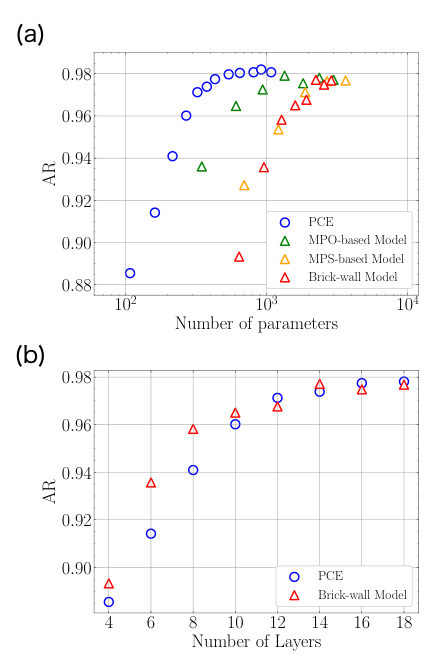
<figcaption class="paper-figure-caption"><b>Fig 2.</b> FIG. 2. Performance evaluation of the comparative models on the G14 benchmark instance (|V | = 800). (a) Parame- ter Efficiency: The relationship between the total number of parameters (log scale) and the achieved approximation ratio across all models. (b) Structural Comparison: The approxi- mation ratio as a function of the number of layers, comparing the PCE Brick-wall ansatz and the Brick-wall model based on tensor networks, both sharing the same brick-wall connec- tivity.</figcaption>
</figure>
<figure class="paper-figure-card">

<figcaption class="paper-figure-caption"><b>Fig 3.</b> FIG. 3. Approximation ratio as a function of circuit depth p for conventional unsupervised PCE and supervised optimiza- tion. Each point represents the approximation ratio averaged over three G-set instances with 800 vertices, G6, G11, and G18. For each instance, the best result obtained over five random initializations is used. Error bars indicate the stan- dard deviation across the three instances.</figcaption>
</figure>
<figure class="paper-figure-card">
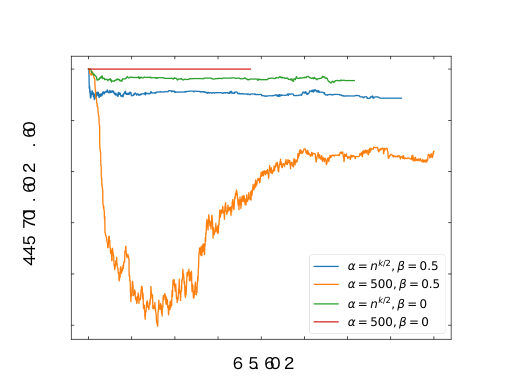
<figcaption class="paper-figure-caption"><b>Fig 4.</b> FIG. 4. Optimization trajectories starting from circuit pa- rameters that reproduce the best-known solution (AR= 1 at iteration 0). Different choices of (α, β) lead to markedly dif- ferent stability near this solution-reproducing region on the G1 instance.</figcaption>
</figure>
<figure class="paper-figure-card">

<figcaption class="paper-figure-caption"><b>Fig 5.</b> Figure 3 shows that supervised optimization reaches AR = 1.0 with only five layers, whereas unsupervised optimization saturates at a lower AR despite using the same ansatz. This indicates that the ansatz is expres- sive enough to represent strong solutions, and that the main limitation in the conventional setting is not insuffi- cient expressivity but poor trainability under the relaxed unsupervised objective function. This further suggests that performance gains may be possible if one can design unsupervised objective functions that induce optimiza- tion dynamics similar to those of the supervised objective function.</figcaption>
</figure>
</div>
<p><strong>Summary.</strong> This paper analyzes the performance limitations of Pauli Correlation Encoding (PCE) for quantum optimization problems like Max-Cut. The authors find that the primary bottleneck is not the circuit's expressive power but the difficulty in training the objective function. They propose a multistage continuation framework that successfully guides the optimization process, leading to performance improvements competitive with advanced classical Graph Neural Network methods.</p>
<p><strong>Why it may be interesting.</strong> It provides a concrete, actionable strategy (multistage optimization) to boost the performance of quantum algorithms like PCE, which is crucial for making near-term quantum devices more effective for optimization tasks.</p>
<details>
<summary>Detailed structure</summary>
<p><strong>Main problem.</strong> The paper aims to improve the performance of Pauli Correlation Encoding (PCE) for quantum optimization, specifically addressing the issue of performance saturation.</p>
<p><strong>Main result.</strong> The primary bottleneck limiting PCE performance is identified as poor trainability under the conventional objective function, not insufficient representational power (expressivity). A proposed multistage continuation framework significantly outperforms conventional PCE and is competitive with state-of-the-art Graph Neural Network (GNN) methods.</p>
<p><strong>Method.</strong> The authors employ a systematic analysis comparing PCE to classical tensor network models and propose a multistage continuation framework to guide the optimization process from a smooth relaxed objective to a sharper, discrete target objective.</p>
<p><strong>Model / system.</strong> The work focuses on optimizing combinatorial problems, such as Max-Cut on a graph G=(V, E), using the Pauli Correlation Encoding (PCE) framework, which maps optimization variables to expectation values of Pauli strings in a parameterized quantum circuit.</p>
<p><strong>Key observables.</strong> Solution quality (Max-Cut value), parameter efficiency (number of trainable parameters), and the ability of the objective function to guide optimization (trainability).</p>
<p><strong>Important parameters / regimes.</strong> The number of layers in the quantum circuit, the regularization parameters ($\alpha, eta$), and the number of stages ($K$) in the continuation framework.</p>
<p><strong>Assumptions / limitations.</strong> The main limitation of conventional PCE is assumed to be the objective function's inability to guide optimization toward high-cut-value parameter regions, rather than the circuit's expressivity.</p>
<p><strong>Figures summary.</strong> Figures compare PCE's parameter efficiency against classical tensor network models and show the performance improvement achieved by the multistage approach over conventional PCE when benchmarked against GNNs.</p>
<p><strong>Paper structure.</strong> The paper reviews PCE, compares it to classical tensor networks, performs a diagnostic expressivity test, proposes the multistage continuation framework, and finally benchmarks the improved method against GNNs.</p>
</details>
<details>
<summary>Abstract</summary>
<p>Quantum approaches for combinatorial optimization problems have attracted considerable attention in recent years. Among these approaches, Pauli Correlation Encoding (PCE) has emerged as a promising framework for quantum devices with limited qubit resources because it embeds optimization variables in expectation values of Pauli strings. However, the mechanisms underlying its performance and the reasons for its saturation remain unclear. In this work, we investigate these questions through a systematic analysis of expressivity and trainability. First, we compare PCE with classical surrogate models based on tensor networks whose structures progressively approach the topology of the PCE circuit. The results show that PCE attains comparable solution quality with substantially fewer trainable parameters, indicating strong parameter efficiency. Second, to determine whether the performance saturation of conventional PCE is caused by insufficient expressivity or by optimization difficulty, we perform a diagnostic expressivity test in which the circuit is trained toward reference configurations for Max-Cut. The results show that even shallow PCE circuits can represent strong solutions, indicating that the main bottleneck is not the representational power of the ansatz, but the trainability under the relaxed objective function. Motivated by this finding, we propose a multistage continuation framework that gradually transforms a smooth relaxed objective into a sharper objective that more closely approximates the target discrete problem. Numerical experiments on G-set instances with 800 vertices show that the proposed method consistently outperforms conventional PCE and is competitive with representative graph neural network (GNN) methods. These results clarify the main factors behind PCE performance and provide a practical strategy for improving PCE on quantum devices with limited qubit resources.</p>
</details>
<p><sub><a href="#top">↑ back to top</a></sub></p>

<p><a id="paper-2609.10429"></a></p>
<h3 id="faster-computation-with-the-generalized-laplacian-quantum-walk"><a href="http://arxiv.org/abs/2609.10429v1">Faster Computation with the Generalized Laplacian Quantum Walk</a></h3>
<p><strong>Authors:</strong> Jonas Duda, Thomas G. Wong<br>
<strong>Type:</strong> theory · <strong>Category:</strong> quantum information and computing · <strong>PDF:</strong> <a href="https://arxiv.org/pdf/2609.10429v1">https://arxiv.org/pdf/2609.10429v1</a><br>
<strong>Analysis basis:</strong> full PDF text, analyzed in chunks</p>
<div class="figure-strip-hint">↔ Scroll figures horizontally</div>
<div class="paper-figures-scroll">
<figure class="paper-figure-card">

<figcaption class="paper-figure-caption"><b>Fig 1.</b> FIG. 1. A complete bipartite graph with N1 = 7 and N2 = 5 vertices in each partite set, of which k1 = 3 and k2 = 2 vertices are marked in the respective sets, as shown by the double circles. Identically evolving vertices are identically colored and labeled.</figcaption>
</figure>
<figure class="paper-figure-card">
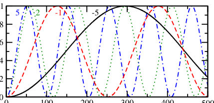
<figcaption class="paper-figure-caption"><b>Fig 2.</b> FIG. 2. Success probability versus time for search on complete bipartite graphs at γ = γa(3). The solid black curve is when α = −5, the red dashed curve is when α = −1, the green dotted curve is when α = 2 and the blue dot-dashed curve is when α = 5.</figcaption>
</figure>
<figure class="paper-figure-card">

<figcaption class="paper-figure-caption"><b>Fig 3.</b> FIG. 3. The probability at each type of vertex versus time for search on the complete bipartite graph with N1 = 5000, N2 = 2000 vertices, of which k1 = 2 and k2 = 3 are marked, with γ = γa (3) α = −1. The solid black curve is the probability in |a⟩, the red dashed curve is |b⟩(which is near 0 the entire evolution), the green dotted curve is |c⟩, and the blue dot- dashed curve is |d⟩.</figcaption>
</figure>
</div>
<p><strong>Summary.</strong> This paper analyzes quantum search algorithms on bipartite graphs using a quantum walk defined by a generalized Laplacian. The authors prove that by tuning the Laplacian with a degree matrix term (controlled by $\alpha$), the quantum walk can achieve search times that approach the theoretical optimum. This suggests the generalized Laplacian provides a powerful tool for designing faster quantum algorithms.</p>
<p><strong>Why it may be interesting.</strong> The explicit derivation of how modifying the underlying graph Laplacian structure (via $\alpha$) can systematically improve the computational speed of a quantum search algorithm is highly relevant to designing novel quantum protocols.</p>
<details>
<summary>Detailed structure</summary>
<p><strong>Main problem.</strong> To prove that a continuous-time quantum walk governed by a generalized Laplacian can solve a specific computational search problem faster than standard quantum walks.</p>
<p><strong>Main result.</strong> The generalized Laplacian quantum walk achieves the optimal search time scaling, outperforming walks governed by the standard Laplacian or adjacency matrix, especially in the asymptotic limit of large graph sizes.</p>
<p><strong>Method.</strong> The analysis involves deriving the time evolution of the quantum state using the Hamiltonian associated with the generalized Laplacian, followed by asymptotic analysis of the resulting probabilities.</p>
<p><strong>Model / system.</strong> The model is a quantum walk on a complete bipartite graph, whose evolution is governed by a Hamiltonian derived from the generalized Laplacian $L_\alpha = L + \alpha D$.</p>
<p><strong>Key observables.</strong> Success probability at marked vertices, and the minimum time $t^*$ required for the success probability to approach unity.</p>
<p><strong>Important parameters / regimes.</strong> The parameter $\alpha$ controlling the degree matrix contribution, and the graph sizes $N_1, N_2$ relative to the number of marked vertices $k_1, k_2$.</p>
<p><strong>Assumptions / limitations.</strong> The analysis relies on the asymptotic limit where the graph sizes $N_1$ and $N_2$ are large, and the parameter $|\alpha|$ tends to infinity.</p>
<p><strong>Figures summary.</strong> Figure 2 demonstrates the shortening of the search runtime as the magnitude of $\alpha$ increases, confirming the superior performance of the generalized Laplacian walk.</p>
<p><strong>Paper structure.</strong> The paper establishes the quantum walk model using the generalized Laplacian, derives the time evolution equations, and then analyzes the asymptotic behavior of the runtime $t^*$ by calculating its dependence on $\alpha$.</p>
</details>
<details>
<summary>Abstract</summary>
<p>Quantum walks are the quantum analogues of classical random walks or Markov chains. They are universal models of quantum computing, and they underpin a variety of quantum algorithms. We prove that a continuous-time quantum walk effected by a generalized Laplacian, which can arise in spin chains, can solve a computational problem more quickly than typical quantum walks governed by the standard Laplacian or adjacency matrix. This generalized Laplacian consists of the standard Laplacian plus a real-valued multiple of the degree matrix, and we prove that as the magnitude of the multiple of the degree matrix is increased, its corresponding quantum walk can search the complete bipartite graph with multiple marked vertices in time that approaches the optimal. This raises the potential for the generalized Laplacian quantum walk to be a useful method for developing additional faster quantum algorithms.</p>
</details>
<p><sub><a href="#top">↑ back to top</a></sub></p>

<p><a id="paper-2609.09557"></a></p>
<h3 id="from-certifying-rank-math956math-projectors-to-non-positivity-entanglement-and-non-hermitian-witnesses-through-traces-of-matrix-powers"><a href="http://arxiv.org/abs/2609.09557v1">From Certifying Rank $k$ Projectors To Non-Positivity, Entanglement, And Non-Hermitian Witnesses Through Traces Of Matrix Powers</a></h3>
<p><strong>Authors:</strong> H. F. Chau<br>
<strong>Type:</strong> theory · <strong>Category:</strong> quantum information and computing · <strong>PDF:</strong> <a href="https://arxiv.org/pdf/2609.09557v1">https://arxiv.org/pdf/2609.09557v1</a><br>
<strong>Analysis basis:</strong> full PDF text, analyzed in chunks</p>
<div class="figure-strip-hint">↔ Scroll figures horizontally</div>
<div class="paper-figures-scroll">
<figure class="paper-figure-card">
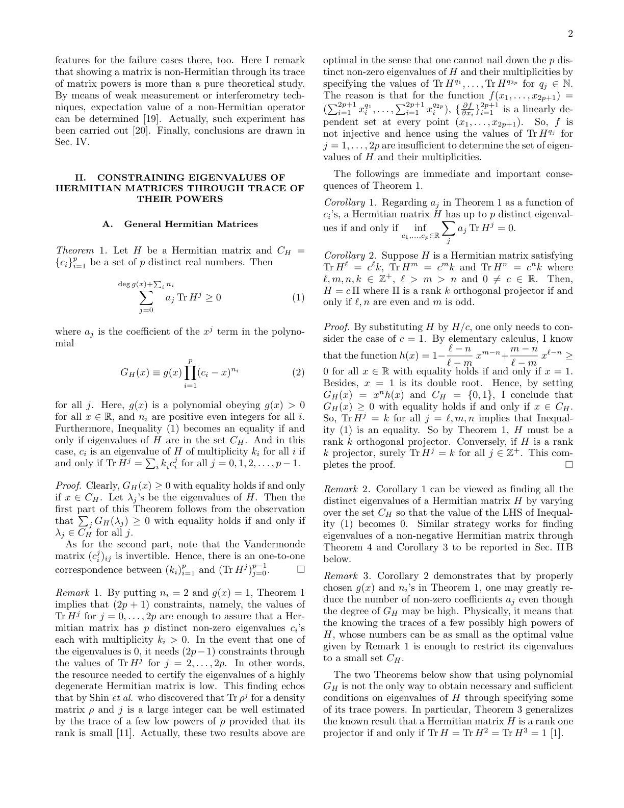
<figcaption class="paper-figure-caption"><b>Fig 1.</b> Low-resolution page preview, page 2</figcaption>
</figure>
<figure class="paper-figure-card">

<figcaption class="paper-figure-caption"><b>Fig 2.</b> Low-resolution page preview, page 3</figcaption>
</figure>
<figure class="paper-figure-card">

<figcaption class="paper-figure-caption"><b>Fig 3.</b> Low-resolution page preview, page 4</figcaption>
</figure>
<figure class="paper-figure-card">

<figcaption class="paper-figure-caption"><b>Fig 4.</b> Low-resolution page preview, page 5</figcaption>
</figure>
<figure class="paper-figure-card">
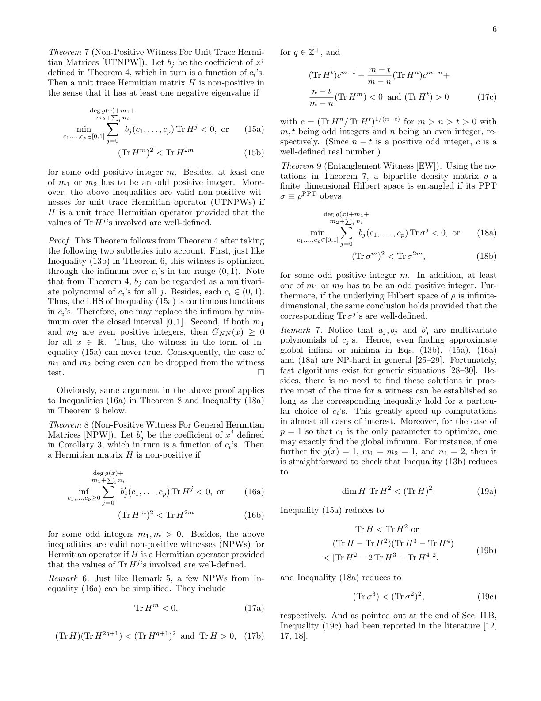
<figcaption class="paper-figure-caption"><b>Fig 5.</b> Low-resolution page preview, page 6</figcaption>
</figure>
</div>
<p><strong>Summary.</strong> This paper develops a general mathematical framework to test spectral properties of quantum operators using only the traces of their powers. It establishes various 'witnesses' derived from these traces that can certify crucial quantum features like entanglement or non-positivity. This provides a powerful, resource-efficient diagnostic tool for quantum state characterization.</p>
<p><strong>Why it may be interesting.</strong> This work provides rigorous, purely algebraic tools derived from moment calculations to diagnose fundamental quantum properties (like entanglement or non-negativity) without requiring full knowledge of the Hamiltonian or state preparation.</p>
<details>
<summary>Detailed structure</summary>
<p><strong>Main problem.</strong> The paper systematically studies necessary and sufficient conditions to constrain the eigenvalues of Hermitian matrices using the traces of their powers.</p>
<p><strong>Main result.</strong> These trace-based conditions serve as powerful witnesses to certify quantum state properties, such as entanglement, non-positivity, and non-Hermiticity.</p>
<p><strong>Method.</strong> The core method involves deriving and analyzing polynomial inequalities involving $ ext{Tr} H^j$ to place constraints on the spectrum of the matrix $H$.</p>
<p><strong>Model / system.</strong> The analysis focuses on Hermitian matrices ($H$) and density matrices ($
ho$) relevant to quantum information theory. The results generalize the purity condition ($   ext{Tr} 
ho^2 = 1$) to broader spectral constraints.</p>
<p><strong>Key observables.</strong> The primary observables are the traces of matrix powers ($ ext{Tr} H^j$), which are used to diagnose properties like purity, rank, non-negativity, and Hermiticity.</p>
<p><strong>Important parameters / regimes.</strong> The analysis considers the dimension of the matrix ($   ext{dim } H$), the number of distinct eigenvalues ($p$), and the impact of measurement uncertainty ($\delta$) and machine epsilon ($u$).</p>
<p><strong>Assumptions / limitations.</strong> The authors address limitations regarding the number of traces needed to determine the spectrum and the practical challenges posed by numerical stability and measurement errors.</p>
<p><strong>Figures summary.</strong> The notes mention tables (Table II, III, IV) summarizing the performance of various witnesses (UTNPW, NPW, EW) for certifying non-positivity and entanglement across different dimensions.</p>
<p><strong>Paper structure.</strong> The paper builds from generalizing the purity condition to establishing general theorems (Theorem 1) for eigenvalue constraints, then developing specific witnesses (NHW, UTNPW, NPW, EW) for physical properties, and concluding with a discussion of performance and open questions.</p>
</details>
<details>
<summary>Abstract</summary>
<p>We all know that a density matrix $ρ$ is pure if and only if $\mathrm{Tr} \,ρ^2 = 1$. But is this the only way to prove the purity of $ρ$ using the trace of its powers? Here I systematically study the necessary and sufficient conditions of the more general question of guaranteeing that all eigenvalues of a Hermitian matrix belong to a specified set through its trace of powers. More importantly, these characterization results are automatically witnesses certifying a quantum state as entangled, a Hermitian operator has least one negative eigenvalue and a linear operator as non-Hermitian. I demonstrate the effectiveness of these witnesses, analyze their performance, and study their strength, weakness together with resource requirement through numerical simulation as well as analytical work. I also discuss briefly the effects of numerical stability, uncertainty in measurement and rounding errors on these problems.</p>
</details>
<p><sub><a href="#top">↑ back to top</a></sub></p>

<p><a id="paper-2609.09753"></a></p>
<h3 id="generalized-fidelity-and-the-data-processing-inequality"><a href="http://arxiv.org/abs/2609.09753v1">Generalized Fidelity and the Data Processing Inequality</a></h3>
<p><strong>Authors:</strong> Reza Rajaei<br>
<strong>Type:</strong> theory · <strong>Category:</strong> quantum information and computing · <strong>PDF:</strong> <a href="https://arxiv.org/pdf/2609.09753v1">https://arxiv.org/pdf/2609.09753v1</a><br>
<strong>Analysis basis:</strong> full PDF text, analyzed in chunks</p>
<div class="figure-strip-hint">↔ Scroll figures horizontally</div>
<div class="paper-figures-scroll">
<figure class="paper-figure-card">
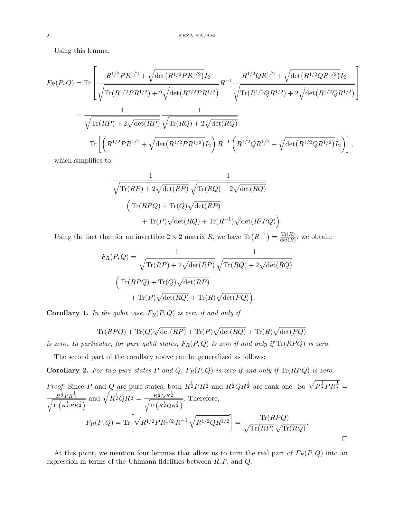
<figcaption class="paper-figure-caption"><b>Fig 1.</b> Low-resolution page preview, page 2</figcaption>
</figure>
<figure class="paper-figure-card">

<figcaption class="paper-figure-caption"><b>Fig 2.</b> Low-resolution page preview, page 3</figcaption>
</figure>
<figure class="paper-figure-card">
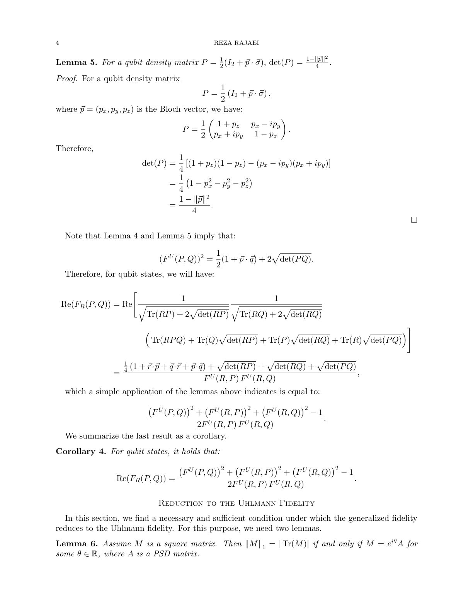
<figcaption class="paper-figure-caption"><b>Fig 3.</b> Low-resolution page preview, page 4</figcaption>
</figure>
<figure class="paper-figure-card">
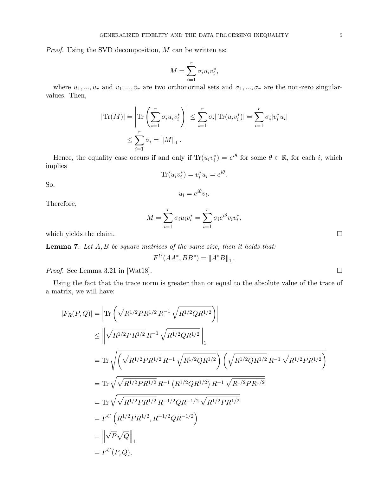
<figcaption class="paper-figure-caption"><b>Fig 4.</b> Low-resolution page preview, page 5</figcaption>
</figure>
<figure class="paper-figure-card">
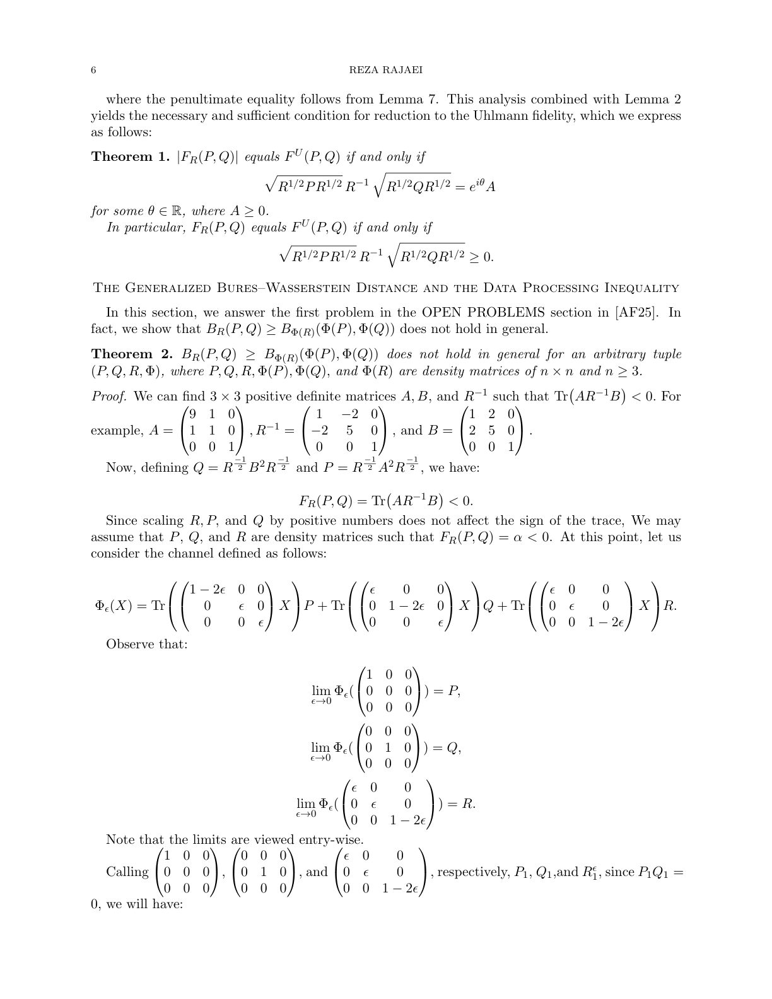
<figcaption class="paper-figure-caption"><b>Fig 5.</b> Low-resolution page preview, page 6</figcaption>
</figure>
</div>
<p><strong>Summary.</strong> This theoretical work analyzes the generalized Bures--Wasserstein distance derived from the generalized fidelity, finding that it generally violates the Data Processing Inequality in dimensions higher than two. For qubits, the authors provide specific conditions under which the DPI holds, offering deeper insights into the robustness of quantum distance measures under noisy quantum channels.</p>
<p><strong>Why it may be interesting.</strong> The study of distance metrics and their monotonicity under quantum operations (like channels) is fundamental to understanding quantum information capacity and process fidelity, making it highly relevant to quantum information theory.</p>
<details>
<summary>Detailed structure</summary>
<p><strong>Main problem.</strong> The paper investigates whether the generalized Bures--Wasserstein distance, induced by the generalized fidelity, satisfies the Data Processing Inequality (DPI) for quantum channels.</p>
<p><strong>Main result.</strong> The distance fails to satisfy the DPI in dimensions greater than two, but sufficient conditions for the DPI are derived for the two-dimensional (qubit) case.</p>
<p><strong>Method.</strong> The authors use explicit formulas for the generalized fidelity, Pauli matrix representations, and construct counterexamples using block matrices to test the DPI.</p>
<p><strong>Model / system.</strong> The analysis focuses on quantum states represented by positive semi-definite matrices, particularly in the qubit case (2x2 matrices), and their evolution under quantum channels.</p>
<p><strong>Key observables.</strong> Generalized Fidelity (FR), Squared generalized Bures--Wasserstein distance (BR), and Uhlmann fidelity (Fu).</p>
<p><strong>Important parameters / regimes.</strong> Dimensionality ($n \geq 2$), and the specific structure of the quantum channels ($\Phi$).</p>
<p><strong>Assumptions / limitations.</strong> For the qubit case, the analysis relies on specific algebraic properties derived from the structure of the fidelity and the assumption of specific relationships between fidelities.</p>
<p><strong>Figures summary.</strong> Not specified.</p>
<p><strong>Paper structure.</strong> The paper first establishes the non-satisfaction of DPI for $n \geq 3$. It then derives sufficient conditions for the DPI in $n=2$ using explicit formulas. Finally, it analyzes the relationship between the generalized fidelity and the Uhlmann fidelity, and examines the DPI failure using channel operations.</p>
</details>
<details>
<summary>Abstract</summary>
<p>In this note, we show that the generalized Bures--Wasserstein distance induced by the generalized fidelity does not satisfy the data processing inequality in dimensions greater than two. In dimension two, although we do not settle the DPI in full generality, we derive two sufficient conditions guaranteeing it by using an explicit formula for the real part of the generalized fidelity. Furthermore, we find a necessary and sufficient condition under which the generalized fidelity reduces to the Uhlmann fidelity.</p>
</details>
<p><sub><a href="#top">↑ back to top</a></sub></p>

<p><a id="paper-2609.09421"></a></p>
<h3 id="induced-random-mixed-states-are-symmetric-dirichlet-mixtures"><a href="http://arxiv.org/abs/2609.09421v1">Induced random mixed states are symmetric Dirichlet mixtures</a></h3>
<p><strong>Authors:</strong> Brian T. Kirby, Alexander C. B. Greenwood, Sanjaya Lohani, Joseph M. Lukens<br>
<strong>Type:</strong> theory · <strong>Category:</strong> other · <strong>PDF:</strong> <a href="https://arxiv.org/pdf/2609.09421v1">https://arxiv.org/pdf/2609.09421v1</a><br>
<strong>Analysis basis:</strong> full PDF text, analyzed in chunks</p>
<div class="figure-strip-hint">↔ Scroll figures horizontally</div>
<div class="paper-figures-scroll">
<figure class="paper-figure-card">

<figcaption class="paper-figure-caption"><b>Fig 1.</b> FIG. 1. Geometric illustration of the equivalence between the Mai-Alquier (MA) construction (left) and the induced-state construction (right) for a qubit system (D = 2) and environment dimension K = 3. Left: A mixed state is formed by convexly combining K independent Haar-random pure states |ψj⟩with weights p ∼DirK(D). Right: The columns |˜gj⟩of a 2 × 3 Ginibre matrix (plotted as orange circles) determine normalized directions |ψj⟩= |˜gj⟩/∥|˜gj⟩∥(plotted as blue circles) and radial weights through trace normalization of GG†. Under this decomposition, the normalized radial variables generate the same Dirichlet law for the mixture weights, yielding the same random density-matrix distribution.</figcaption>
</figure>
</div>
<p><strong>Summary.</strong> This work establishes a deep mathematical connection between random mixed states generated by tracing out an environment and the statistically defined Mai-Alquier distribution. This equivalence recasts difficult quantum expectation value calculations into solvable problems involving Dirichlet moments. It offers a unified computational perspective for analyzing observables like purity and overlaps in open quantum systems.</p>
<p><strong>Why it may be interesting.</strong> It provides a powerful, unified mathematical tool to calculate complex expectation values for open quantum systems by mapping them onto well-understood statistical distributions (Dirichlet).</p>
<details>
<summary>Detailed structure</summary>
<p><strong>Main problem.</strong> The paper establishes an exact distributional equivalence between random mixed states induced by partial tracing over an environment and the Mai-Alquier (MA) distribution.</p>
<p><strong>Main result.</strong> This equivalence allows calculations of expectation values for quantum observables (like purity moments and determinants) to be recast into manageable calculations involving Dirichlet moments and low-order Haar averages.</p>
<p><strong>Method.</strong> The authors use the mathematical framework connecting partial traces over Haar-random pure states to the structure of the symmetric Dirichlet distribution, particularly when the Dirichlet parameter matches the system dimension.</p>
<p><strong>Model / system.</strong> The system involves a D-dimensional quantum system coupled to a K-dimensional environment, prepared in a Haar-random global pure state. The resulting mixed state is analyzed using the MA ensemble model.</p>
<p><strong>Key observables.</strong> Purity moments ($  ext{Tr} 
ho^m$), mean Hilbert-Schmidt distance, and the determinant ($\det 
ho$).</p>
<p><strong>Important parameters / regimes.</strong> System dimension (D), Environment dimension (K), and the Dirichlet concentration parameter ($\alpha=D$).</p>
<p><strong>Assumptions / limitations.</strong> The equivalence holds under the condition that the Dirichlet concentration parameter $\alpha$ equals the system dimension $D$.</p>
<p><strong>Figures summary.</strong> Figure 1 illustrates the geometric equivalence for a qubit system, showing both the MA construction and the induced state construction using Ginibre matrix columns leading to the same Dirichlet law.</p>
<p><strong>Paper structure.</strong> The paper proceeds by proving the distributional equivalence, then systematically applying this equivalence to derive exact formulas for key quantum observables, including purity moments, distance metrics, and the determinant.</p>
</details>
<details>
<summary>Abstract</summary>
<p>We establish an exact equivalence in distribution between $D$-dimensional random mixed states induced by partial traces over $K$-dimensional environments and the Mai-Alquier distribution, a mixture of $K$ independent Haar-random pure states weighted by a symmetric Dirichlet distribution. This identification recasts a class of expectation values for induced ensembles into calculations involving Dirichlet moments and low-order Haar averages on a single-system state space. As applications, we recover exact purity moments up to fourth order, derive the mean Hilbert--Schmidt distance between independent induced ensembles with possibly different environment dimensions, and obtain exact average determinants. These results provide a unified and constructive perspective on induced random mixed states and on the evaluation of quantities such as purity moments, overlaps, and determinants.</p>
</details>
<p><sub><a href="#top">↑ back to top</a></sub></p>

<p><a id="paper-2609.09426"></a></p>
<h3 id="josephson-energy-of-superconducting-junctions-amorphous-versus-crystalline-tunnel-barriers"><a href="http://arxiv.org/abs/2609.09426v1">Josephson energy of superconducting junctions: amorphous versus crystalline tunnel barriers</a></h3>
<p><strong>Authors:</strong> Wanting Zhang, Aldilene Saraiva-Souza, Félix Beaudoin, Xianghua Kong, Hong Guo, Yu Zhu<br>
<strong>Type:</strong> theory · <strong>Category:</strong> quantum information and computing · <strong>PDF:</strong> <a href="https://arxiv.org/pdf/2609.09426v1">https://arxiv.org/pdf/2609.09426v1</a><br>
<strong>Analysis basis:</strong> full PDF text, analyzed in chunks</p>
<div class="figure-strip-hint">↔ Scroll figures horizontally</div>
<div class="paper-figures-scroll">
<figure class="paper-figure-card">
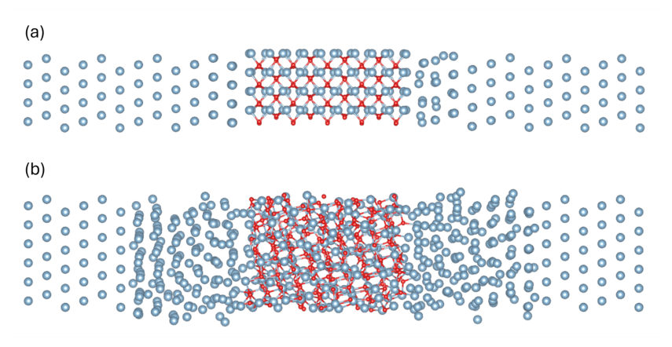
<figcaption class="paper-figure-caption"><b>Fig 1.</b> Figure 1: Atomic structures of the Josephson-junction models. (a) Junction with a crystalline Al2O3 tunnel barrier. (b) Junction with an amorphous Al2O3 tunnel barrier of the same oxide thickness. Blue and red spheres represent Al and O atoms, respectively.</figcaption>
</figure>
<figure class="paper-figure-card">

<figcaption class="paper-figure-caption"><b>Fig 2.</b> Figure 2: Josephson energies of the ten amorphous junction samples (bars), estimated from the calculated Fermi-level transmission using the Ambegaokar–Baratoff relation with ∆= 0.18 meV and a device area of 200 × 200 nm2. Each junction is scaled using its corresponding transverse simulation-cell area A0. The dashed line marks the crystalline reference junction (EJ/h ≈0.73 GHz).</figcaption>
</figure>
<figure class="paper-figure-card">

<figcaption class="paper-figure-caption"><b>Fig 3.</b> Figure 3: Area-normalized energy-dependent transmission T(E)/A0 on a logarithmic scale, where A0 is the transverse area of the corresponding simulation cell. The thick black curve is the crystalline junction; the colored curves are the ten amorphous junctions. Normalization by A0 accounts for the different transverse supercell areas of the crystalline and amorphous models. All curves exhibit a similar transmission-valley structure, while their values near the Fermi level vary substantially among samples.</figcaption>
</figure>
<figure class="paper-figure-card">

<figcaption class="paper-figure-caption"><b>Fig 4.</b> Figure 4: Probability of the Fermi-level scattering states (natural-log scale), averaged over the transverse xy dimensions, for all 64 transport channels in each of the ten amorphous junction samples. The panels correspond to Samples 1–10, and the color denotes the transport-channel index. The approximately linear decay within the oxide on the logarithmic scale is characteristic of quantum tunneling; the different decay rates show that some channels are considerably more conductive than others.</figcaption>
</figure>
<figure class="paper-figure-card">
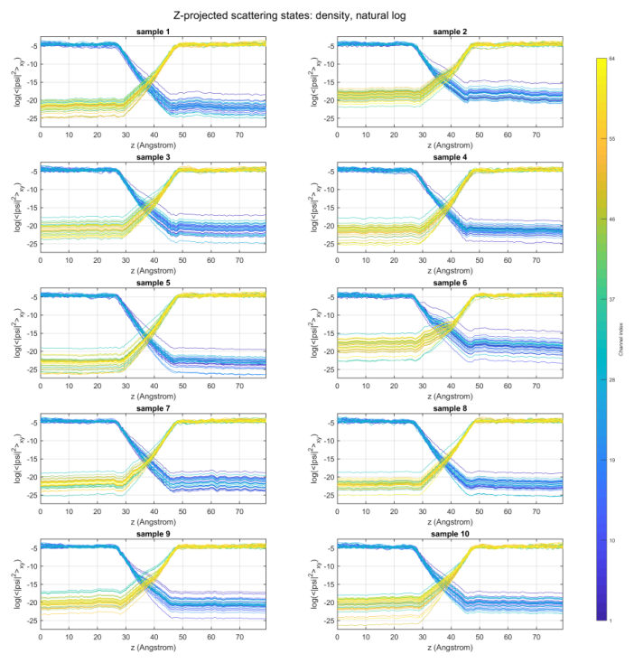
<figcaption class="paper-figure-caption"><b>Fig 5.</b> Figure 5 visualizes two representative scattering states in real space: (a) the least conductive channel of Sample 5, the lowest-transmission junction, and (b) the most conductive channel of Sample 6, the highest-transmission junction. In the least conductive case, the wave function remains confined to the incident electrode and interface region and dies out inside the oxide; in the most conductive case, it penetrates the barrier and retains substantial amplitude on the transmitted side. These observations suggest the following physical picture. Amorphous Al2O3 has a spatially nonuniform stoichiometry: Al-rich regions have a lower effective tunnel-barrier height, while O-rich regions have a...</figcaption>
</figure>
</div>
<p><strong>Summary.</strong> This work quantitatively models the Josephson energy in superconducting junctions by comparing crystalline and amorphous oxide barriers. Using NEGF-DFT, the authors find that amorphous barriers lead to highly variable and generally higher $E_J$ values due to percolation paths. This establishes a detailed, atomistic understanding of how oxide microstructure dictates superconducting circuit performance.</p>
<p><strong>Why it may be interesting.</strong> The direct link established between the atomic-scale disorder (amorphous structure) and a macroscopic circuit parameter ($E_J$) provides crucial physical insight for designing superconducting quantum circuits.</p>
<details>
<summary>Detailed structure</summary>
<p><strong>Main problem.</strong> The paper investigates how the atomic microstructure of the tunnel barrier affects the Josephson energy ($E_J$) in superconducting junctions, a critical parameter for transmon qubits.</p>
<p><strong>Main result.</strong> Amorphous barriers exhibit a mean $E_J/h$ significantly higher than crystalline barriers, with the large variability attributed to percolation-like tunneling pathways formed by stoichiometric inhomogeneity.</p>
<p><strong>Method.</strong> The study employs first-principles quantum-transport calculations using the NEGF-DFT method to compute the critical current and subsequently $E_J$ via the Ambegaokar–Baratoff relation.</p>
<p><strong>Model / system.</strong> The system is an Al/AlO_x/Al Josephson junction. The analysis compares junctions with a crystalline Al2O3 barrier against multiple realizations of an amorphous Al2O3 barrier.</p>
<p><strong>Key observables.</strong> Josephson energy ($E_J$), normal-state conductance ($G_{A/N}$), and critical current ($I_c$).</p>
<p><strong>Important parameters / regimes.</strong> The oxide barrier thickness (1-2 nm), the superconducting gap ($\Delta = 0.18 	ext{ meV}$), and the junction area ($200 	imes 200 	ext{ nm}^2$).</p>
<p><strong>Assumptions / limitations.</strong> Transport is assumed to be quantum tunneling, and the analysis relies on mapping the junction to a representative large area to average out local fluctuations.</p>
<p><strong>Figures summary.</strong> Figures compare the atomic structures of crystalline vs. amorphous barriers, show the distribution of calculated $E_J$ values for multiple amorphous samples, and visualize the energy-dependent transmission coefficients.</p>
<p><strong>Paper structure.</strong> The paper follows a computational workflow: first, calculating the transmission coefficient $T(E)$ using NEGF-DFT; second, determining the normal-state conductance $G_{A/N}$; and finally, calculating $E_J$ using the Ambegaokar–Baratoff relation.</p>
</details>
<details>
<summary>Abstract</summary>
<p>The Josephson energy $E_J$ is a key parameter governing the properties of transmon superconducting qubits. In Al/AlO$_x$/Al junctions, $E_J$ is set by electron tunneling through an ultrathin oxide barrier and therefore depends exponentially on the atomic structure of the barrier. We compute $E_J$ by first-principles device modeling based on the NEGF-DFT quantum-transport method, comparing a junction with a crystalline Al$_2$O$_3$ barrier against ten junctions with melt--quenched amorphous Al$_2$O$_3$ barriers of the same thickness. From the Fermi-level transmission and the Ambegaokar--Baratoff relation, we obtain a mean $E_J/h$ of $2.78$ GHz for the amorphous ensemble, with a standard deviation of $4.67$ GHz, compared with $0.73$ GHz for the crystalline reference; individual amorphous values span nearly two orders of magnitude. Scattering-state analysis shows that transport is quantum tunneling and that the variability originates from stoichiometric inhomogeneity of the amorphous oxide: Al-rich, low-barrier regions can connect into percolation-like tunneling pathways that strongly enhance the conductance. A realistic $200\times200$ nm$^2$ junction self-averages over more than $2\times10^4$ such microscopic regions. These results establish a quantitative atomistic route from oxide microstructure to the superconducting-circuit energy scale $E_J$.</p>
</details>
<p><sub><a href="#top">↑ back to top</a></sub></p>

<p><a id="paper-2609.09280"></a></p>
<h3 id="multipole-splats-for-optimized-and-inverted-effective-potentials"><a href="http://arxiv.org/abs/2609.09280v1">Multipole splats for optimized and inverted effective potentials</a></h3>
<p><strong>Authors:</strong> Matija Medvidović, Angel Rubio, Juan Carrasquilla<br>
<strong>Type:</strong> theory · <strong>Category:</strong> strongly correlated electrons · <strong>PDF:</strong> <a href="https://arxiv.org/pdf/2609.09280v1">https://arxiv.org/pdf/2609.09280v1</a><br>
<strong>Analysis basis:</strong> full PDF text, analyzed in chunks</p>
<div class="figure-strip-hint">↔ Scroll figures horizontally</div>
<div class="paper-figures-scroll">
<figure class="paper-figure-card">
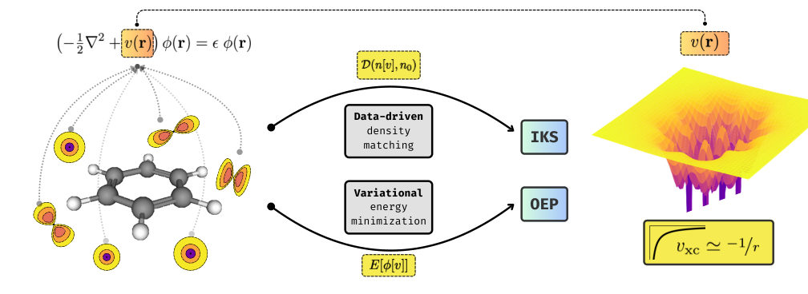
<figcaption class="paper-figure-caption"><b>Fig 1.</b> FIG. 1. A schematic of the variational potential optimization enabled by multipole splat potentials. We use floating Gaussian monopoles and dipoles to exactly control the asymptotic decay and generate the optimized effective potential as an electrostatic potential of a fictitious charge distribution. Both optimized effective potentials and inverted exact Kohn-Sham potentials can then be recovered by direct optimization.</figcaption>
</figure>
<figure class="paper-figure-card">
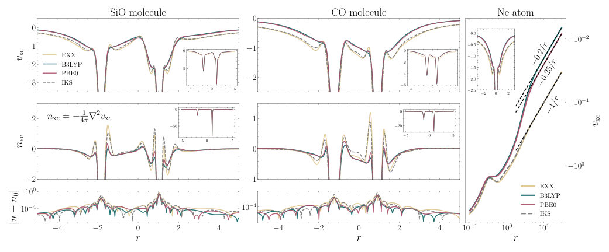
<figcaption class="paper-figure-caption"><b>Fig 2.</b> FIG. 2. Left: The OEP and IKS potentials and their XC source densities for the silicon monoxide (SiO) molecule using the EXX, B3LYP and PBE0 functionals as well as the IKS with respect to the independently computed CCSD(T) reference density. The orbitals were represented using the aug-cc-pVQZ (quadruple-zeta) basis. In the bottom panel, we show the density TV contributions along the axis of the molecule, demonstrating density matching between OEP (IKS) and GKS (CCSD(T)). Center: Similar to the left panel, computed on the carbon monoxide (CO) molecule. Right: The radial dependence and the asymptotic decay of neon (Ne) atom effective potentials. We observe the expected asymptotic decay from...</figcaption>
</figure>
<figure class="paper-figure-card">
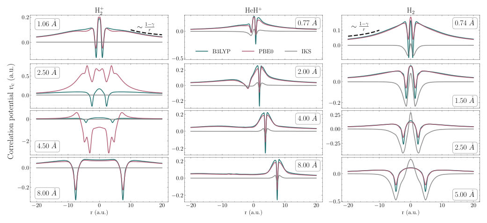
<figcaption class="paper-figure-caption"><b>Fig 3.</b> FIG. 3. Effective correlation potentials vc = vxc −vEXX, defined in Eq. 34, plotted along the molecular axis for H+ 2 (left), HeH+ (center), and H2 (right). Internuclear separation increases downward and is labeled in each panel. Hybrid OEP results (B3LYP, PBE0) are contrasted with the inverted (INV) potential obtained from a CCSD(T) reference density, serving as a high-level finite-basis reference. Dashed lines mark the (1−γ)/r asymptote inherited from the missing fraction of exact exchange. For H+ 2 , the exact vc vanishes identically. Vertical scales are independent across panels.</figcaption>
</figure>
<figure class="paper-figure-card">
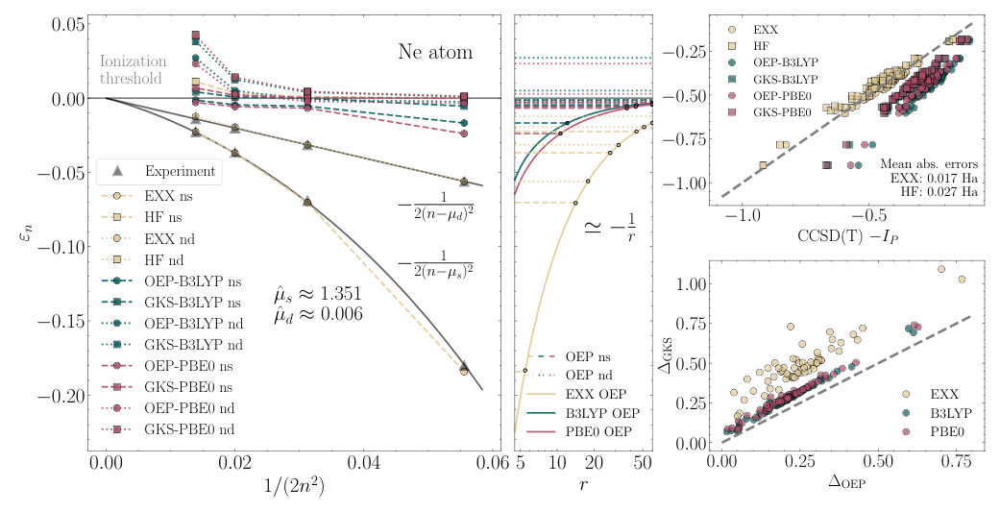
<figcaption class="paper-figure-caption"><b>Fig 4.</b> FIG. 4. Left: Neon atom Rydberg ns (l = 0) and nd (l = 2) series εn, plotted against 1/2n2. Reference experimental values and quantum-defect fits ˆµs ≈1.351 and ˆµd ≈0.006 from Eq. 35 are highlighted. OEP eigenvalues and their GKS or HF counterparts are plotted as well. Center: Converged OEP potentials on a logarithmic radial scale, sharing the energy axis with the left panel. Horizontal lines mark the ns and nd eigenvalues, with classical turning points marked. Upper right: HOMO eigenvalues against CCSD(T) ionization potentials IP for the selected 60 GW100 systems with N ≤40 electrons. Mean absolute errors |εHOMO +IP | for EXX (≈17 mHa) and HF (≈27 mHa) are shown, averaged over these...</figcaption>
</figure>
<figure class="paper-figure-card">
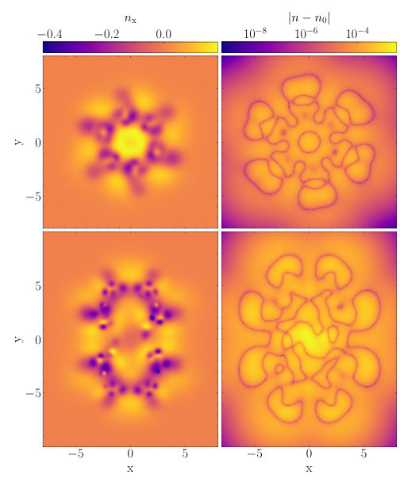
<figcaption class="paper-figure-caption"><b>Fig 5.</b> FIG. 5. Exact exchange OEP results for benzene (top) and naphthalene (bottom), evaluated on a plane 1 Bohr above the molecular plane. Left: The exchange source density, read directly off the converged multipole splat parameters, resolv- ing the delocalized π system of benzene and the inequivalent bonding regions of naphthalene. Right: The pointwise den- sity variation |n −n0| against the GKS reference n0.</figcaption>
</figure>
</div>
<p><strong>Summary.</strong> This paper introduces 'multipole splats,' a novel mathematical technique to overcome the numerical instability plaguing the calculation of optimized effective potentials (OEP) and inverted Kohn-Sham (IKS) potentials in DFT. By reformulating these problems as stable nonlinear optimizations, the authors provide a robust method to derive highly accurate, physically meaningful effective potentials for correlated electron systems.</p>
<p><strong>Why it may be interesting.</strong> This work provides a robust, mathematically stable framework for calculating highly accurate, non-local effective potentials, which is crucial for simulating real-time dynamics and response properties in quantum materials.</p>
<details>
<summary>Detailed structure</summary>
<p><strong>Main problem.</strong> Modern DFT methods using hybrid functionals generate nonlocal and orbital-dependent effective potentials that introduce systematic errors in response properties and real-time dynamics.</p>
<p><strong>Main result.</strong> The authors introduce 'multipole splats,' a novel potential parametrization that recasts the difficult OEP and IKS problems into stable, nonlinear optimization tasks, yielding improved potentials for various DFT failure modes.</p>
<p><strong>Method.</strong> The method uses multipole splats—a trial potential built from Gaussian monopoles and dipoles—to stabilize the optimization of effective potentials, bypassing the numerical fragility associated with inverting the KS response function.</p>
<p><strong>Model / system.</strong> The work is situated within Kohn-Sham Density Functional Theory (DFT) applied to many-electron systems. It focuses on constructing optimized effective potentials (OEP) and inverted Kohn-Sham (IKS) potentials to accurately represent the exchange-correlation potential.</p>
<p><strong>Key observables.</strong> Effective potentials ($v_{xc}$), HOMO eigenvalues ($\epsilon_{	ext{HOMO}}$), localization energy ($E_{loc}$), and the asymptotic decay of the potential ($v_{xc} \sim -1/r$).</p>
<p><strong>Important parameters / regimes.</strong> The number of splats ($N_1, N_2$), regularization strength ($\lambda$), and the choice of hybrid functional (e.g., B3LYP, PBE0).</p>
<p><strong>Assumptions / limitations.</strong> The approach assumes that OEP and IKS can be formulated as stable, supervised nonlinear optimization problems directly solvable in standard orbital basis sets.</p>
<p><strong>Figures summary.</strong> Figures show converged $v_{xc}$ potentials for various molecules (e.g., CO, SiO) along the internuclear axis, demonstrating the potential's structure and asymptotic decay. Tables compare calculated HOMO eigenvalues across different potential construction methods.</p>
<p><strong>Paper structure.</strong> The paper first establishes the limitations of current DFT potentials, then introduces the multipole splats as a stable variational/supervised learning framework. It details the application to OEP and IKS, benchmarks the method against established potentials (TG, KLI), and finally demonstrates its capability by calculating potentials for larger systems and recovering spectral properties like the Rydberg series.</p>
</details>
<details>
<summary>Abstract</summary>
<p>Approximate single-particle descriptions of correlated matter remain the principal source of actionable predictions in quantum science. In modern density functional theory (DFT), hybrid effective Hamiltonians are constructed to reproduce equilibrium densities and forces. However, their nonlocal and orbital-dependent potentials leave systematic errors in response properties and real-time dynamics. Local optimized effective potentials (OEP) or inverted Kohn-Sham (IKS) potentials would remove this limitation, but the numerical fragility in finite orbital bases has long prevented their wide adoption. We introduce multipole splats, a class of trial potentials that carry the correct asymptotic decay by construction. By showing that OEP and IKS map to variational and supervised variants of Hamiltonian learning, we recast both problems as stable nonlinear optimization formulated directly in standard orbital basis sets and applicable to any hybrid functional approximation. We show improvements to three canonical DFT failure modes. Firstly, by comparing approximate and near-exact inverted effective correlation potentials, we isolate the spatial signatures of self-interaction, delocalization, and static correlation errors. Secondly, we recover the Rydberg series without empirical asymptotic corrections, demonstrating access to precise spectral properties. Finally, we compute exact-exchange potentials for larger $π$-conjugated systems, establishing scaling capacity. Multipole splats extract new first-principles insights from established approximations and provide capacity for robust dataset generation for downstream processing and learning.</p>
</details>
<p><sub><a href="#top">↑ back to top</a></sub></p>

<p><a id="paper-2609.09467"></a></p>
<h3 id="noise-limits-on-fault-tolerant-fermionic-quantum-computing"><a href="http://arxiv.org/abs/2609.09467v1">Noise Limits on Fault-Tolerant Fermionic Quantum Computing</a></h3>
<p><strong>Authors:</strong> Owen Allison, Luke Coffman<br>
<strong>Type:</strong> theory · <strong>Category:</strong> quantum information and computing · <strong>PDF:</strong> <a href="https://arxiv.org/pdf/2609.09467v1">https://arxiv.org/pdf/2609.09467v1</a><br>
<strong>Analysis basis:</strong> full PDF text, analyzed in chunks</p>
<div class="figure-strip-hint">↔ Scroll figures horizontally</div>
<div class="paper-figures-scroll">
<figure class="paper-figure-card">

<figcaption class="paper-figure-caption"><b>Fig 1.</b> FIG. 1. The noise model under consideration: First we apply the two qubit resourceful gate U, then apply local depolarizing noise D⊗2 p .</figcaption>
</figure>
<figure class="paper-figure-card">

<figcaption class="paper-figure-caption"><b>Fig 2.</b> FIG. 2. Numerical results implementing Algorithm 1 for SWAP. The left two graphs show the value for ∆± for different probabilities of depolarization p. The third graph shows that [ρU,p, P] = 0 regardless of noise.</figcaption>
</figure>
</div>
<p><strong>Summary.</strong> This work establishes a theoretical upper bound on the noise tolerance for fault-tolerant fermionic quantum computation. By analyzing the channel's properties using fermionic Choi states and concurrences, the authors derive a limit of approximately 62% for the depolarizing noise. This result is significant as it sets a new benchmark for the resilience of fermionic quantum hardware.</p>
<p><strong>Why it may be interesting.</strong> It provides a rigorous, quantitative measure of hardware resilience for a specific, physically relevant quantum computing model (fermions), which is crucial for designing practical quantum processors.</p>
<details>
<summary>Detailed structure</summary>
<p><strong>Main problem.</strong> The paper determines the maximum noise level that fault-tolerant quantum circuits can sustain while maintaining universal quantum computation capabilities.</p>
<p><strong>Main result.</strong> The derived upper bound for fermionic quantum computing using the matchgate is approximately 62%, which is claimed to be the best known bound for fermionic systems.</p>
<p><strong>Method.</strong> The analysis uses Uhlmann-Wootters concurrences applied to the fermionic Choi state to test when the combined noisy channel becomes convex Gaussian, signaling a loss of computational power.</p>
<p><strong>Model / system.</strong> The system is fermionic quantum computing, which utilizes a matchgate with a non-Gaussian resource universal gate set. The noise model applied is local depolarizing noise.</p>
<p><strong>Key observables.</strong> Uhlmann-Wootters concurrences ($C_{\pm}(U, p)$) and the condition for the combined channel to be convex Gaussian.</p>
<p><strong>Important parameters / regimes.</strong> The noise probability $p$, with the critical limit found to be $p = (8 - 2\sqrt{6})/5 \approx 62\%$.</p>
<p><strong>Assumptions / limitations.</strong> The analysis assumes the gate $U$ is parity preserving and that the noise model (local depolarizing noise) is the primary source of decoherence.</p>
<p><strong>Figures summary.</strong> Figures illustrate the noise model (gate followed by local depolarizing noise) and show numerical results confirming the relationship between the noise parameter $p$ and the diagnostic measures ($\Delta_{\pm}$).</p>
<p><strong>Paper structure.</strong> The paper builds from establishing the general problem of noise thresholds, detailing the mathematical framework using parity projection operators and the Choi state, and finally deriving the specific concurrence bounds that yield the 62% limit.</p>
</details>
<details>
<summary>Abstract</summary>
<p>Determining the highest amount of noise that quantum circuits can handle is an interesting and crucial task in the development of fault-tolerant quantum computation. Previous work has constrained this upper limit for local depolarizing noise to $\approx 45~\%$ for circuits constructed using the universal Clifford with T gate set by finding the noise threshold where the gate set loses universality. In this work, we use a similar method with the matchgate with non-Gaussian resource universal gate set to find a limit of $p=(8 - 2 \sqrt{6})/5$ or $\approx 62~\%$ for fermionic quantum computing that is independent of circuit depth. To do this, we use Uhlmann-Wootters concurrences for a 4-mode fermionic Choi state representing a resourceful gate combined with local depolarizing noise to determine when the combined channel is convex Gaussian. These bounds are not directly comparable due to differences in noise model making the bound of $\approx 62~\%$ the best known for fermions.</p>
</details>
<p><sub><a href="#top">↑ back to top</a></sub></p>

<p><a id="paper-2609.09373"></a></p>
<h3 id="non-multiplicativity-of-the-holevo-barycenter-of-quantum-channels"><a href="http://arxiv.org/abs/2609.09373v1">Non-Multiplicativity of the Holevo Barycenter of Quantum Channels</a></h3>
<p><strong>Authors:</strong> Sayantan Chakraborty, Stefano Mancini, Leonardo Rossetti, Andreas Winter<br>
<strong>Type:</strong> theory · <strong>Category:</strong> quantum information and computing · <strong>PDF:</strong> <a href="https://arxiv.org/pdf/2609.09373v1">https://arxiv.org/pdf/2609.09373v1</a><br>
<strong>Analysis basis:</strong> full PDF text, analyzed in chunks</p>
<div class="figure-strip-hint">↔ Scroll figures horizontally</div>
<div class="paper-figures-scroll">
<figure class="paper-figure-card">
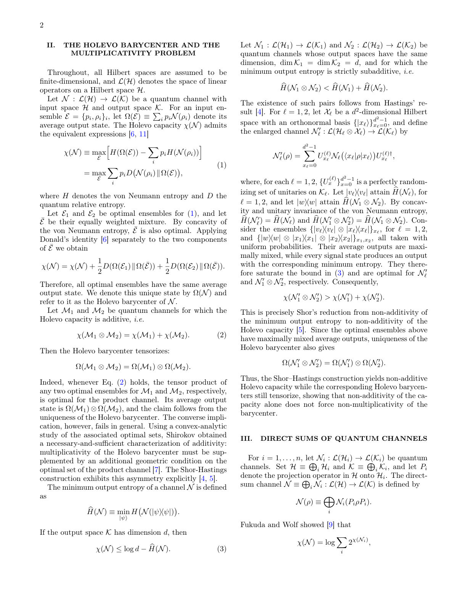
<figcaption class="paper-figure-caption"><b>Fig 1.</b> Low-resolution page preview, page 2</figcaption>
</figure>
<figure class="paper-figure-card">

<figcaption class="paper-figure-caption"><b>Fig 2.</b> Low-resolution page preview, page 3</figcaption>
</figure>
<figure class="paper-figure-card">

<figcaption class="paper-figure-caption"><b>Fig 3.</b> Low-resolution page preview, page 4</figcaption>
</figure>
<figure class="paper-figure-card">
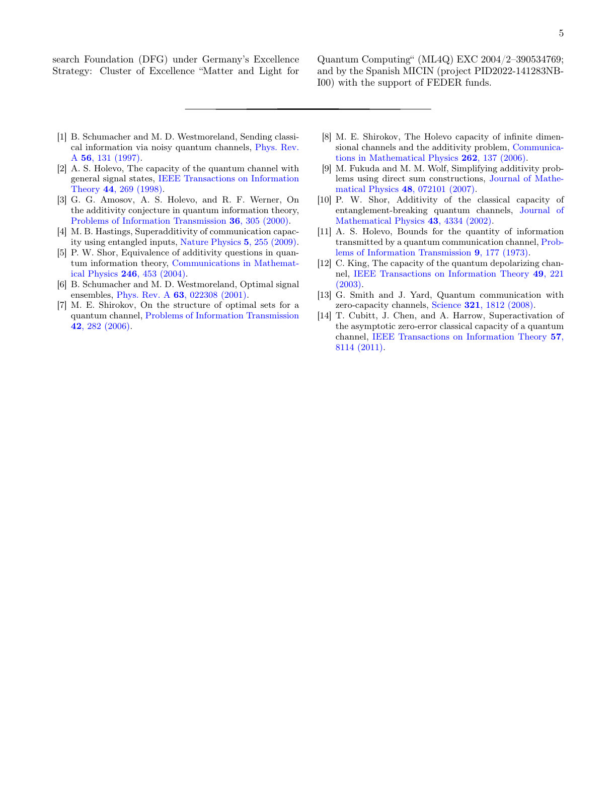
<figcaption class="paper-figure-caption"><b>Fig 4.</b> Low-resolution page preview, page 5</figcaption>
</figure>
</div>
<p><strong>Summary.</strong> This paper tackles the multiplicativity problem for the Holevo barycenter of quantum channels, a concept related to the additivity of the Holevo capacity. The authors demonstrate that this barycenter is generally not multiplicative, providing explicit counterexamples. This result shows that the geometric structure of optimal quantum measurements is sensitive to the tensor product structure of the underlying channels.</p>
<p><strong>Why it may be interesting.</strong> This work delves into the fundamental structural properties of quantum information measures, showing that even when capacity fails to be additive, the associated geometric structure (the barycenter) can fail to be multiplicative, highlighting deep non-linearities in quantum resource theories.</p>
<details>
<summary>Detailed structure</summary>
<p><strong>Main problem.</strong> The paper investigates the multiplicativity problem for the Holevo barycenter of quantum channels, asking if the barycenter of a product channel equals the tensor product of the individual barycenters.</p>
<p><strong>Main result.</strong> The authors prove that the Holevo barycenter is generally not multiplicative, providing counterexamples where $\Omega(N \otimes N) 
eq \Omega(N) \otimes \Omega(N)$. They also show the entropy of the barycenter is neither universally subadditive nor superadditive.</p>
<p><strong>Method.</strong> The analysis involves constructing specific quantum channels using direct sums and tensor products, comparing derived block weights, and analyzing the von Neumann entropy of the output ensemble.</p>
<p><strong>Model / system.</strong> The study concerns general quantum channels $N: L(H) 	o L(K)$ acting on finite-dimensional Hilbert spaces, relating concepts like Holevo capacity and the Holevo barycenter.</p>
<p><strong>Key observables.</strong> Holevo Capacity ($\chi(N)$), Holevo Barycenter ($\Omega(N)$), Von Neumann entropy of the output ensemble ($\mathcal{H}(\Omega)$), and Shannon entropies of associated probability distributions.</p>
<p><strong>Important parameters / regimes.</strong> The analysis relies on constructing channels exhibiting superadditive Holevo capacity ($\chi(\mathcal{N}_1 \otimes \mathcal{N}_2) = \chi(\mathcal{N}_1) + \chi(\mathcal{N}_2) + \delta$).</p>
<p><strong>Assumptions / limitations.</strong> The analysis is restricted to finite-dimensional Hilbert spaces.</p>
<p><strong>Figures summary.</strong> Not specified by the notes.</p>
<p><strong>Paper structure.</strong> The paper reviews the relationship between additivity/multiplicativity and the barycenter, establishes formulas for direct-sum and tensor-product channels, and then constructs specific counterexamples to disprove universal multiplicativity.</p>
</details>
<details>
<summary>Abstract</summary>
<p>The Holevo barycenter of a quantum channel is the unique output state obtained as the average output of any ensemble achieving the Holevo capacity. Given two quantum channels, the multiplicativity problem asks whether this barycenter tensorizes under parallel composition, namely whether the barycenter of the product channel coincides with the tensor product of the individual barycenters. This question is closely related to the additivity problem for the Holevo capacity: additivity implies tensorization of the Holevo barycenter, while tensorization alone is not sufficient for additivity. Although a construction is known that demonstrates the existence of channels with non-additive Holevo capacity, their corresponding Holevo barycenters still tensorize, leaving open whether multiplicativity might ultimately hold universally. Here, we answer this question in the negative by exhibiting channels for which the Holevo barycenter is not multiplicative under the tensor product of the channel with itself. Moreover, we show that the entropy of the Holevo barycenter is neither universally subadditive nor universally superadditive under tensor product.</p>
</details>
<p><sub><a href="#top">↑ back to top</a></sub></p>

<p><a id="paper-2609.10424"></a></p>
<h3 id="noncommutative-sharp-hausdorff-young-inequality"><a href="http://arxiv.org/abs/2609.10424v1">Noncommutative sharp Hausdorff-Young inequality</a></h3>
<p><strong>Authors:</strong> Hongsen Qiu, Xiao Xiong<br>
<strong>Type:</strong> theory · <strong>Category:</strong> other · <strong>PDF:</strong> <a href="https://arxiv.org/pdf/2609.10424v1">https://arxiv.org/pdf/2609.10424v1</a><br>
<strong>Analysis basis:</strong> full PDF text, analyzed in chunks</p>
<div class="figure-strip-hint">↔ Scroll figures horizontally</div>
<div class="paper-figures-scroll">
<figure class="paper-figure-card">
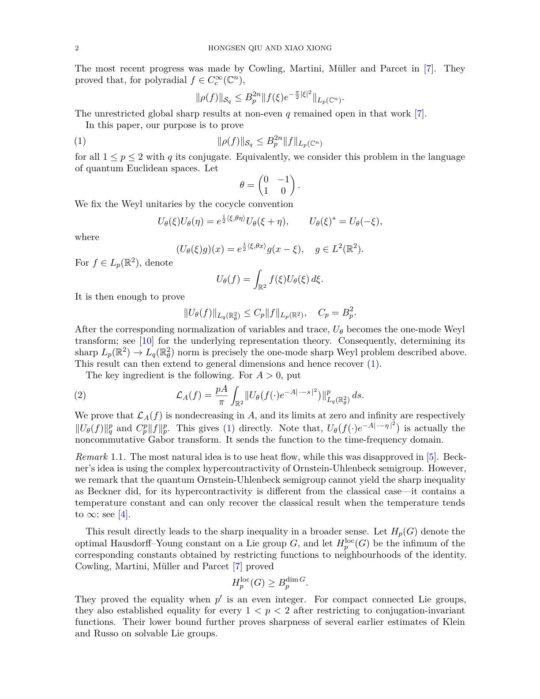
<figcaption class="paper-figure-caption"><b>Fig 1.</b> Low-resolution page preview, page 2</figcaption>
</figure>
<figure class="paper-figure-card">

<figcaption class="paper-figure-caption"><b>Fig 2.</b> Low-resolution page preview, page 3</figcaption>
</figure>
<figure class="paper-figure-card">
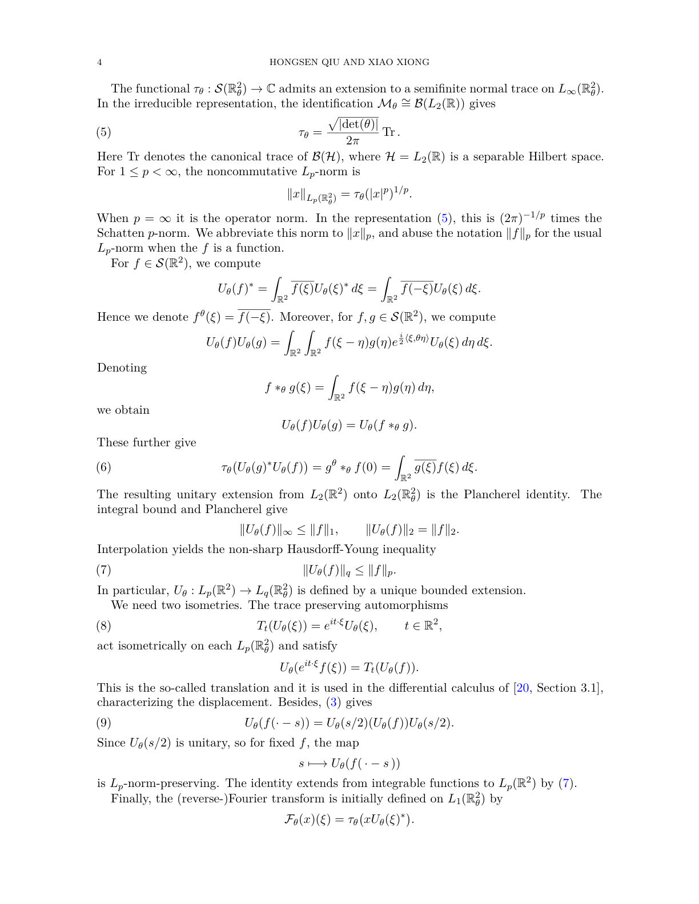
<figcaption class="paper-figure-caption"><b>Fig 3.</b> Low-resolution page preview, page 4</figcaption>
</figure>
<figure class="paper-figure-card">

<figcaption class="paper-figure-caption"><b>Fig 4.</b> Low-resolution page preview, page 5</figcaption>
</figure>
<figure class="paper-figure-card">

<figcaption class="paper-figure-caption"><b>Fig 5.</b> Low-resolution page preview, page 6</figcaption>
</figure>
</div>
<p><strong>Summary.</strong> This theoretical paper establishes the sharp Hausdorff-Young inequality on the quantum Euclidean space, a key result in noncommutative harmonic analysis. The authors employ advanced techniques from operator calculus, including analyzing operator-valued flows and Fréchet derivatives. The result provides sharp constants for fundamental transforms like the Weyl transform and extends to defining noncommutative convolution inequalities.</p>
<p><strong>Why it may be interesting.</strong> While the core topic is harmonic analysis, the use of operator calculus, non-commutative geometry, and connections to quantum transforms (like the Weyl transform) makes it highly relevant to theoretical quantum physics, especially in areas dealing with non-commutative quantum field theories or quantum phase space representations.</p>
<details>
<summary>Detailed structure</summary>
<p><strong>Main problem.</strong> The paper aims to prove the sharp Hausdorff-Young inequality in a noncommutative setting, specifically on the quantum Euclidean space.</p>
<p><strong>Main result.</strong> The authors successfully prove the sharp inequality $\|U_	heta(f)\|_{L^q(\mathbb{R}^2_	heta)} \le B_{2,p} \|f\|_{L^p(\mathbb{R}^2)}$ for $1 \le p \le 2$, which implies sharp constants for the Weyl transform and the Heisenberg group.</p>
<p><strong>Method.</strong> The proof heavily relies on operator calculus, utilizing novel operator-valued flows related to the Gabor transform and analyzing the Fréchet derivatives of the associated $L^p$-norms.</p>
<p><strong>Model / system.</strong> The analysis is conducted on the quantum Euclidean space, modeled by the von Neumann subalgebra $M_	heta = L^\infty(\mathbb{R}^2_	heta)$, which involves unitary operators $U_	heta(\xi)$ acting on $L^2(\mathbb{R}^2)$. The framework is generalized to higher dimensions ($\mathbb{R}^d_	heta$).</p>
<p><strong>Key observables.</strong> The norms $\|U_	heta(f)\|_{L^q(\mathbb{R}^2_	heta)}$ and $\|f\|_{L^p(\mathbb{R}^2)}$, and the associated constants $B_{2,p}$ and $C_p$.</p>
<p><strong>Important parameters / regimes.</strong> The parameters $p$ and $q$ (conjugate exponents) and the deformation parameter $  heta$ characterizing the noncommutativity.</p>
<p><strong>Assumptions / limitations.</strong> The final steps rely on the assumption that the relevant function $\Phi$ is twice continuously Fréchet differentiable for $q>2$.</p>
<p><strong>Paper structure.</strong> The paper builds from establishing the inequality on the quantum Euclidean space using operator calculus and flow analysis (Chunks 1 &amp; 2), generalizing the result to higher dimensions and convolution inequalities (Chunk 3), and finally deriving explicit formulas for related operators using commutation relations (Chunk 4).</p>
</details>
<details>
<summary>Abstract</summary>
<p>We prove the sharp Hausdorff--Young inequality on the quantum Euclidean space. Meanwhile, our result implies the sharp Hausdorff-Young constants for the Weyl transform, as well as that for the Heisenberg group. The key ingredient is a novel operator-valued flow related to the Gabor transform. Our method is mainly based on operator calculus and hence generally applicable to similar problems. Finally, we give the definition of noncommutative convolution and include the partial results for the sharp Young's inequality.</p>
</details>
<p><sub><a href="#top">↑ back to top</a></sub></p>
<hr>
<p>
<a href="index.html">← Index</a>
 · <a href="papers_05.html">← Previous</a> · <a href="papers_07.html">Next →</a>
</p>
<hr>

</body>
</html>
